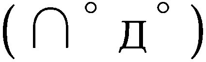

| 「極」怖い話 甦怪(そかい) (竹書房文庫) | |
| 加藤一 | |
| 竹書房 (2010) | |
この作品は縦書きでレイアウトされています。
また、ご覧になる機種により、表示の差異が認められることがあります。
一部の漢字が簡略字で表示されていることがあります。
※本書に登場する人物名は、様々な事情を考慮してすべて仮名にしてあります。また、作中に登場する体験者の記憶と体験当時の世相を鑑み、極力当時の様相を再現するよう心がけています。現代においては若干耳慣れない言葉・表記が登場する場合がありますが、これらは差別・侮蔑を意図する考えに基づくものではありません。
イラスト 浅沼テイジ（ネコノテンシスタジオ）
目次
まえがき
怪談が成立するために欠かせないものは何だろう？
まず第一に体験者。酷い目に遭い、悲しい思いをし、驚かされる方々。彼らの原体験というものがあって、初めて実話怪談は実話たりえる根拠を得る。
次に、著者。体験談は著者によって発見され、そして整理される。この時点で体験者という鉱脈から掘り出された体験談という原石は、カッティングされ研磨を施される。ダイヤがその原石のままでは価値を生まないように、体験談という恐怖の原石から輝きを損なわないよう怪異を抉 り出す作業を経て、体験談は怪談に成る。
最後に欠かせないのは、読者。意外に思われるかもしれないが、実話怪談は著者の手によってのみ紡 がれるわけでも、体験者と著者だけがいれば成立するわけでもない。読者という鑑賞者、或いは怪異の真価を見出し、価値と評価を与える者が必要だ。
この三者、この三位一体が揃うことで初めて実話怪談は成立する。
さて、本書、『「極」怖い話甦 怪 』は、【超‐１／二〇〇七】によって発掘され、日の目を見ることになった体験談、怪談を原石としている。
冒頭で触れたように、体験談という原石を研磨し怪異を露わにすることによって、怪談は怪談たらしめられる。しかし、その原石を研磨する著者には、それぞれ好み、趣味、癖といったものがある。その著者の性向によって、カッティングのスタイルは変わってくるわけで、同じ体験談を別の著者が別の方向から見ると、それまでとはまったく違う見え方をしてくる、ということがある。
この、著者のカッティングのスタイルと読者の嗜 好 が合致する場合もあれば、微妙な興味のズレから、著者の意向が存分に発揮されないこともある。
超‐１／二〇〇七の応募作品のうち講評者の嗜好と著者のスタイルが合致したものは、既に傑作選の形で世に送り出すことができた。しかしながら、怪談の元となった体験談の中に潜む、凄みや恐怖のポテンシャルについては何ら遜 色 ないにも関わらず、読者の支持を得られなかった怪談が数多く残された。それらは十分に吟味されなかったものもあれば、講評者の嗜 好 の違いから評価が割れたものなど、様々な理由で三年近くも埋もれてきた。
改めて読み返せば、手酷い恐怖を得るに足りる高いポテンシャルを備えたものが、決して少なくなかった。これを埋もれさせておくのはあまりに忍びない。
怪談を怪談たらしめる要素は、体験者、著者、読者の三位一体。冒頭でそう述べた。
しかし、怪談を怪談たらしめるさらに重要な要素は、伝 播 性であると思う。
語られた怪談。それを聞いた者が、「こんな話を聞いたんだけど」と、次に引き継ぐ。
次々に引き継がれ、語り継がれ、恐怖が伝播拡散していく。
「おまえ、知ってるか？」
この枕 詞 とともに、より多くの人々に拡散していく。
怪談は本来、体験者に起きた忌 み事を書き留めた読み物であって、そこに「良い怪談」などという形容はないし、あってはならないと思う。
しかし、怪談にとって良い、または喜ばしいこと、その存在意義を満たすことが何であるかを思えば、やはり「体験者、著者の手を離れて語り継がれること」にあろうかと思う。
本書においては、超‐１主宰者として「語り継ぐ」という大役を任じさせていただいた。
体験者が遭い、超‐１著者が発掘した恐怖を、改めて加藤一が磨いてみた。
原石に潜んでいたどす黒い恐怖を、皆で紐解いていきましょう。
著者
鯉泥棒
今から二十年以上前。小学四年生の夏休みの話。
「鯉さ釣りに行ぐべ。巨大なの。でっげーの」
悪友の安部君が、使い慣れた竿を担いで舩 山 君を誘いにきた。
この頃の舩山君達はといえば、暇さえあれば竿を握って近隣の川に出掛けていた。
とは言え、近くの川で釣れるものはフナやオイカワといった程度の小魚ばかり。しかし、釣りのおもしろさに馴染んでくると、大人達がこぞって釣り上げるような大物が羨 ましく思えてくる。
折しも舩山君はグラス製の七尺竿を買ってもらったばかりで、「竿に違 わぬ釣果」とやらを夢見ていた。
一度でいいから、魚拓を取ってみたい。手ぬぐいに墨色黒々とした鱗 を残してみたい。
一人前の釣り師を気取ってみたい──そういうお年頃なのだった。
「いい所見つけたんだ。二人でいがねか？」
行かないわけがなかった。
安部君の話では、驚くほどでかい鯉が入れ食いで釣れる、ということだった。
ただし、ちょっとばかり離れたところにある。自転車で二時間も掛かる。
重いペダルを踏みながら山道を行くと、不意に開けた場所に出た。
周囲を小高い山に囲まれた沼。
辺りに人気はない。もちろん、釣り糸を垂れている奴など一人もいない。
蝉の声に慣れてくると、時折青々とした水面を打つ水音が聞こえた。
それに合わせて水面に水紋が広がる。鰭 の大きさを見るだに、それらが大物とわかる。
信じられないほどに魚影が濃いのだ。これは期待できる──。
興奮を抑えきれず、早速餌の蚯蚓 を掘るためスコップを取り出そうとした。
「餌なら、いぐらでもあっぺ。ほれあそご」
安部君は沼の畔 にある小屋を指さした。
安部君の後を付いて、人の出入りもほとんどなさそうな、吹けば飛ぶよな掘っ立て小屋に近付いた。揺すれば崩れそうなほどの粗末な小屋の割に、その入り口は南京錠でがっちりと施錠されている。安部君は何の遠慮もなく手近の岩を拾い、南京錠に打ち付けた。
鍵は簡単に吹っ飛んだ。
立て付けの悪い扉を引くと、中から異臭が漂ってきた。独特の、虫の臭い。
「ほら、餌だ」
安部君の両掌一杯に、茶褐色の粒が盛り上げられていた。
蚕 の蛹 だ。蚯蚓なんかよりずっと、鯉の食いつきもいい。
しかし、鯉餌用に乾燥させた蛹が、釣り堀でもなさそうなこんな場所に大量にあるのはおかしい。
「おめ、これ......こごって......」
恐らくここは、天然の沼地ではない。
もちろん、釣り堀でもない。
秘密の場所といえば秘密の場所なのだろうが、恐らくは鯉を養殖する沼ではないのか。
つまり、持ち主のいる沼に勝手に入って釣りをしよう、ということだ。
安部君は首を振った。
「大丈夫だ。誰も来ねって」
ばれたらどうしようという不安と、それでも大物を釣り上げてみたいという願望とが舩山君の心中に渦巻いたが、目の前でドプンと水音を立てる鯉達の誘惑には勝てなかった。
盗んだ蛹を釣り針に付け、沼に向かって糸を垂れる。
針が水面に落ちるのとほぼ同時に、水面が沸き立つように揺れた。
鯉の輪──というものを舩山君は恐らく初めて目撃した。
垂らした糸をめがけて色とりどりの鯉が、文字通り殺到する。
白い身体に朱を散らした錦鯉、浅 黄 色の鱗がまぶしいドイツ鯉。
それらが二重三重の輪を作り、他の魚体を押しのけて水面で跳ねる。
まさに入れ食い。
なんと無警戒なことか。
釣り上げられる危険性など、体験したこともないのだろう。水面を揺らすものは全て安全な餌としか思わない養殖沼の手厚く守られた鯉達は、食べ慣れた蛹の先に釣り針があることなど、微 塵 も警戒していない。
舩山君は興奮していた。釣り慣れたフナやオイカワだって、こんな軽々と針には掛からないし、これほど大きくもない。自慢のグラス竿を撓 らせ、次から次へと釣り上げた鯉を魚 籠 の中に押し込む。
「おい、舩山。一匹だけだ。大物一匹だけだっつったべ」
安部君に言われて、あっ、と我に返った。
そうだった。ここは養殖沼なのだ。欲を掻いたら悪事がばれる。
持ち帰るのは一番大きいのを一匹だけ。
舩山君は魚籠の中から一番大きいのを一匹残して、他は全てリリースした。
それからまた十数匹を釣り上げ、その都度魚籠の中身と比べてはリリースを繰り返す。
「大物、来い......」
呟きながら竿を振った。
そこそこの大物の手応えに慣れてきた頃だったが、突然、グンと竿が重くなった。
竿がきしきしと撓 む。リールを必死に巻いて竿先を上げると、黄金色のドイツ鯉が掛かっていた。
これはでかい。今日一日で、恐らく一番でかい。
これ以上は望めない極上の大物を釣り上げ、舩山君はようやく満足した。
安部君も今日一番の大物を釣り上げたところだった。
舩山君は竿先に極上の釣果をぶら下げて、安部君の鼻先に突き出す。
「安部ェ、どうだぁ釣れたかぁ」
「おう、舩山。そっちも釣れたかぁ。ぼちぼち帰っ......」
満面の笑みを浮かべていた安部君は、突然言葉を切った。
舩山君を見るなり、その顔色がみるみるうちに青黒くなっていく。
「ひっ、びっ、くっ、くっ、び、くぅぅぅ、くっ、びぃぃぃぃ！ 」
安部君は舩山君のドイツ鯉を指さし、叫んだ。
「はぁ？」
──魚籠が、何？
確かに極上の鯉だが、腰を抜かすほどのこともなかろう。
安部君は自分の竿も、今釣り上げたばかりの鯉も地面に放り出し、歯の根も合わない珍妙な呻き声を発しつつ、あうあうと舩山君の釣果を指し示した。
舩山君は自分の竿先を眺めるが、そこにぶら下がって暴れているのはとびきり大きくて美しいことを除けば、やはりただの鯉だ。
「おめ、何言ってんだず。鯉......」
舩山君は安部君の足下に転がる竿を見下ろした。その竿先から伸びる糸。
その糸の先に鯉ではないものが掛かっていた。
首。
男の生首。
崩れ落ちた顔面に、濁った眼球。
疎 らな頭髪。顔と頭皮は剥がれ、そこかしこから白骨が覗いている。
その僅かに残った唇の端に針が掛かっていた。
飲み込んだのか吹き飛んだのか、蛹はなかった。
パクパク、パクパクと盛んに唇を動かしている様は、さながら釣り上げられたばかりの鯉のようだった。
「くっ、くっ......」
首ぃぃぃ！
ちゃんと叫べたかどうかはわからない。
ぶるっと身体が震え、股間の辺りが生暖かくなる。
舩山君も安部君も、我先に自転車に駆け寄った。魚籠も竿も放り出した。
パンツとズボンが内股に張り付いて、とても漕ぎにくかった。
後はもう闇雲にペダルを漕いだ。
舩山君の真新しいグラス竿は、沼に放り出したまま。
もう二度と、あの沼には戻れない。
この話にはあと少し続きがある。
舩山君は安部君が男の生首を釣り上げたのを見て、腰を抜かした。だが。
安部君は舩山君が女の生首を釣り上げたのを見て、腰を抜かした、らしい。
「でも、俺が釣ったのは鯉で、安部が釣ったのが男の生首。これは間違いないと思うんだ」
「違う違う、俺が釣ったのは鯉で、おまえが釣ったのは女の生首だった」
二人の意見は今も合致しない。
渋滞
真夜中、徹夜仕事の最中にタバコを買いに出た。
玄関を出ると、自宅前の通りの片側車線が黒い車で埋め尽くされていた。
後部座席には白いレースの高級そうなカーテンが掛かり、運転席は薄暗くて見えない。
全部同じ車。
全部同じ車種。
「何だこりゃ」
自宅を振り返り道路に視線を戻すと、車は全て消えていた。
右から左へ
その昔、大村さんはタクシーの運転手をしていた。
ある晩のこと。
この日は街からずいぶん離れた所へお客を送った後、近道をするべく独り山道を走っていた。
前後に車はなく、対向車もほとんど来ない。
道路灯も少なく、車のヘッドライトだけを頼りに折り返す暗いカーブを下っていく。
──ドスッ。
大きく車が揺れた。
思わずハンドルを取られそうになり、慌ててブレーキを踏んだ。
幸い、見通しのいい場所であったので、路肩に寄せた。
どうも、何か大きなものを踏んだように思えた。
以前、同僚の運転手が同じように何かを踏んでしまったことがあった。まずいことに酔って道ばたに寝転んでいた酔っぱらいだったのだそうで、業務上過失致死に問われた。
大村さんは、ハンドルを握りしめて大きく深呼吸した。
もし、人間だったらどうしよう。そのときは逃げちまおうか。
最悪の事態はいつも真っ先に思い浮かぶ。しかし、何はともあれ確かめてみなければ。
大村さんはハザードランプを点けると、ダッシュボードから取り出した懐中電灯を手に車を降りた。
車体には特に傷や凹みはなかった。
バンパーも、車の下にも異常はない。
懐中電灯を片手に来た道を少し戻ってみた。しかし、人間が倒れている様子はない。
明らかに何らかの塊を踏み越えた手応えはあったはずなのだが、道路には特に凹凸もなかった。
「何だったんだ？」
首を傾げていると、不意に声を掛けられた。
「にいちゃん、乗せとくれや」
ほえ？ と振り向くと、闇の中に男が立っていた。
男は、近頃あまり見なくなった少々古くさいデザインの黒縁眼鏡を掛け、にこやかに笑っている。
薄暗い道路灯を背にしているのに、眼鏡と笑みを湛えた口元だけはくっきり見えた。
「ああ、お客さん」
どうぞ、と言いかけて言葉を飲み込んだ。
前も後ろも人家のない山の中である。この客は一体どこから現れたのか？
──バカッ。
突然、タクシーの後部座席のドアが左右同時に開いた。
普通、タクシーのドアは運転席から開けるものだ。
そしてあのドアは左側のみ開くのであって、右側は開かない。
そもそも、大村さんはまだ自分の車に辿り着いてもいない。
どう反応してよいやら呆然としていると、今度は黒縁眼鏡の男は〈ハハハッ〉と笑いながら、開いたドアから勝手にタクシーに乗り込んだ。
右側のドアから車内に乗り込み、そのまま左側のドアから外へ出て行った。
「へ？」
乗るんじゃないの？
男は空きっぱなしの右のドアから再びタクシーに乗り込んだ。そしてやはり、そのまま車内を通り抜けて左側のドアから出て行く。
「ああ？」
冷やかしか？
何してるんだ、この人。
男はゲラゲラと高らかに哄笑しつつ、何度もそれを繰り返した。
右から左へ。右から左へ。
左側から降りた後、気付いたら右側に回り込んでいる。
いつの間に反対に回ったのかすらわからない。
さすがに大村さんも腹が立ってきた。
「おい、あんた！ 何やってんだ！」
乗るのか乗らないのか、どっちなんだ！ とばかりに怒鳴りつけると、男は一際大きな声で笑いながら左側のドアから飛びだした。
そして、そのままガードレールを飛び越えた。
「えっ、ちょっと！」
ガードレールの向こうは、ほとんど崖と言っても差し支えのないほどの急斜面が広がっている。
がさがさっと草むらを掻き分ける音と、ゲラゲラと耳に付く笑い声だけを残して男は崖下に消えていった。
大村さんは真っ青になった。
あいつ、飛び降りちまったのか！
慌てて男の姿を追ったが、藪 が濃くて男の姿は見つからなかった。
俺が怒鳴ったせいか。
どうしよう。どうしたらいい。
頭を抱え、歯の根も合わぬ心持ちで車に戻ってみると、どうも車の様子がおかしい。
左右のドアを開け広げたタクシーの後部座席には、犬か猫を思わせる動物の土塗れの足跡が、びっしりとこびり付いていた。
果たしてアレは狸か狐か。
新居案内
結婚したばかりの友人宅に遊びに行った。
中古ながらもマイホームを買ったのだという。
「......それで、こっちはねえ、そのまま手を付けずに」
友人に案内されて後を付いていくと、足下を子猫が二匹じゃれ合いながら走ってきた。
黒トラ模様の子猫だ。
〈そうか、マイホームだものね。猫を飼い始めたのね〉
可愛い猫ちゃんね、と褒めようと思った途端、猫の姿は消えた。
デート
映画館の前にて。
彼女を怖がらせてやれ、とホラー映画をチョイス。
「えー、やめようよ。怖いよ」
筑波君の左腕が、外に向けてぐいぐいと引っ張られる。
そんなに嫌なのか。
「大丈夫だよ、怖くないよ」
と、左手を振り返るが、誰もいない。
「あたし、こっち」
筑波君の〈右腕〉にぶら下がっていた彼女は、小首を傾げた。
くの字
社用で銀行に向かう途中のこと。
──ドンッ。
足早に歩く唯子さんの背後から、大きな物体が衝突する音が聞こえた。
直後、それと重ねて生卵を落としたような音も聞こえた。
......パシャッ
立ち止まって振り向くと、二台の車の間に男が挟まっていた。
思わず駆け寄った。
停まっていた車の後ろを通り抜けようとしたのだろう。
そこにタクシーが突っ込んできた。ブレーキを踏む音は聞こえなかったから、減速しないまま激突したようだ。
前の車のトランクルームはペコンと凹み、突っ込んだタクシーのボンネットは歪んで食い込んでいる。最初からそれが対になっていたかのようにぴったりはまり込む二台の車。
男はその隙間に挟まっている。
多分、衝突の瞬間、男は突っ込んでくるタクシーを視界に収めていたのだろう。
上半身をタクシーのボンネット側に預けて、身体をくの字に折り曲げている。
タクシーの後ろには事態を掴めないでいる後続車両が隙間なく続き、車はバックができない。運転手はハンドルを握ったまま青ざめていた。
その一瞬は、世界が静まりかえったように感じられた。
しかし、次第に辺りが騒然とし始めた。
救急車を呼ぶ者。事態を把握しようとする野次馬のさざめき。
他の野次馬の肩越しに携帯電話を突き出して現場を撮影する者もいた。
唯子さんはその野次馬の最前列、特等席にいた。
警察も救急隊もまだ到着せず、救命活動も行われていない。
──腰から下がどんな状態になっているのだろう。
不謹慎ながら、それが非常に気になった。
車の下を覗き込むと、大量の液体が男の足下を濡らしていた。
アスファルトの上に真っ赤な血溜まりができている。動脈を突き破って吹き出した血は不透明で、アスファルトの黒さを少しも透かすことなく実に鮮やかだった。
むしろなんだか作り物の塗料のようだとすら思えた。
くの字に折れ曲がった男の顔は真っ白だった。
人間の顔に差す赤味というのは、血液の色が肌を透かして浮かび上がったものだ。
この男の身体は今や破れた水風船のようなもので、身体を巡る血液は押し潰されて破けた箇所から、どんどん足下に抜け落ちてしまっている。
男の口元は緩んでいた。
薄ら笑いを浮かべているようにすら見えた。
その瞬間に喜びも悦楽もなかっただろうことは想像に難くない。
呻き声ひとつ上がらず、身動ぎひとつしない。
男は痛みに耐えているのではなく、もはや耐える必要がなくなっているのだ。
間近に死体を見た。
直前まで生きていたであろう者が、潰れて中身の漏れた物体になっている。
それに対する好奇心が十分に満たされた──と思えたとき、自分が銀行に向かう途中であったことを思い出した。
あれだけ野次馬がいるのだ。救助も、目撃証言も他の誰かがするだろう。
私には関係ない。
......身動きが取れなかった。
手足は少しも動かすことができない。
身体中が燃え上がるように熱い。
ぶぢっ、ぶぢぶぢぶぢっ。
これは体内の筋が切れる音。
ボゴッ、ベキン。
これは骨が折れる音。
びじゅ、ぶぼばっ、ぶぶっ。
これは内臓が押し潰される音。
それらは全て自分の身体に起きている異変で、音を聞くたびに自分の身体がもはや修復不可能な状態に移っていくのだろうという絶望が弥 増 していった。
身体はくの字に折り曲げられたまま、首を捩ることもままならない。
変えることができない視界の先に男がいた。
男は頷きながらその場に屈んで、唯子さんの顔を覗き込んでいる。
──そこで目が覚めた。
自宅の寝室の天井が見えた。
全身がずぶ濡れだった。
寝汗ではなく、全身が血に塗れているのではないか、と思わず身体をまさぐった。
手足は折れてはおらず、内臓が腹からはみ出しているということもなかった。
「よかった、生きてる......」
夢だ。悪夢だ。
昼間、あんな事故を見たから......。
安堵から、ほうっと溜息が漏れた。
そのとき。
横たわる唯子さんを、ベッドの脇から覗き込む人影があった。
軽く会 釈 するようにくの字に折り曲げられた身体。
目前に突き出されたあの薄ら笑いが、小さく囁 いた。
『......だって、見てただろう』
土嚢袋
──ドサッ。
束ねた新聞紙を高いところから落としたような音。
帰宅途上にあった川原俊行さんは、そんな音を聞いたような気もするし、それは目の前にあるものから連想して、聞いたような気持ちになっていただけかもしれない。
コンビニ前の歩道には、既に人だかりができていた。
ざわめき──そして携帯を取り出してどこかへ電話を掛ける者もいる。
店の前に駐められていた自転車は前輪がひしゃげ、その近くの街路樹は引きちぎられたように枝が毟 り取られていた。
コンビニの店員は、無言のまま路面に散らばる折れた枝を引きずって歩く。
人だかりの合間から、スーツ姿の男が路上に横たわっているのが見えた。
飛び降りだ。
事の次第を把握したのだろう、野次馬達は〈ほら、あれ〉と頭上を指し示す。
釣られて、自分も野次馬達の視線の先を見た。
コンビニが入っている八階建てのビルに嵌め込まれた窓は、どれもぴったりと閉まっている。自然、ビルの屋上にまで目が泳ぐ。
多分、そこから落ちた──いや、飛び降りたのだろう。
あと少しタイミングが違えば、通行人の誰かが巻き添えになっていたかもしれない。いつもの帰宅時間があと数十秒違ったら、下敷きになっていたのは自分かも。
（なんて迷惑なんだ）
地面に転がっている男への同情よりも、不快感と怒りが強く渦巻いた。
野次馬を押しのけて前へ出ると、男の姿がよりはっきりと視界に入る。
男は、艶のある白い布袋を頭から被っていた。
ゴミ袋のようなチープさはなく、そこそこ頑丈そうな作り。日常で見かけることはないが、それは土 嚢 袋ではないかと思われた。
近付いてくる地面を見るのが怖いから、袋を被って飛んだのか。
（怖いんだったら、最初から飛ぶな──！）
もう動かなくなっている男への苛立ちと好奇心がない交ぜになった。
野次馬のうちの誰かが呼んだのだろう、遠くから救急車とパトカーのサイレンが入り交じりながら近付いてきた。
「下がって！ 下がって下さい！」
救急車から飛びだしてきた救急隊員達が、大声で叫びながら蘇生措置を始めた。
袋の男が飛び降りてからずいぶん時間が経っているし、血溜まりもだいぶ広がっている。
手足に力はなく、救急隊員達の呼び掛けに応じる気配もない。
〈死んでるよね。あれ、絶対に死んでる〉
誰もが思っていることを、野次馬の誰かが交わす囁き声が裏付ける。
救急隊員は男の頭部を隠していた白い布袋をはぎ取った。
男の顔がちらりと見えたが、人とはっきり判別できるようなものではなかった。
ぱんぱんに腫れ上がった紫色のそれは、人間の顔のフォルムを無視したもののように見えた。
「......夢に出そう」
隣で様子を窺っていた二人組の女達が眉 を顰 めた。
不快そうな顔をしている割に、手遅れ気味の蘇生の様子を携帯で写メに撮ったりしている。それを誰に送るつもりなのか、と不愉快になる。
嫌悪感と好奇心が入り交じったこの女達のような表情を、自分もしているのだろうかと思うと、自己嫌悪からまた不愉快になった。
憂 鬱 な気持ちを抱えたまま、川原さんは現場を立ち去った。
その夜のこと。
寝苦しさから目が覚めた。
床についてどれほど過ぎたかわからないが、辺りはまだ暗く早起きにも早すぎる。
室内の空気はねっとりと重く、深く呼吸をしても肺の奥まで酸素が届かないような気さえする。
寝直そうかと寝返りを打ったとき、ベッドの下から僅かな振動を感じた。
がさがさ、さりさり。
ペットはいない。ネズミや、ましてやゴキブリのような小さな生き物ではあり得ない。
そっと身を乗り出してみると、ベッドの下から白い布袋が藻 掻 きながら這い出てきた。
布袋の後に土埃と血糊のこびり付いたスーツが続く。
つい先ほど見た飛び降りの男が、俯 せのままもぞもぞとベッドの下から躙 り出る。
光源のない真っ暗な室内であるにも関わらず、男はくっきりとした輪 郭 を浮かび上がらせている。
男は立ち上がろうと床に手を突いた。だが腕はぐにゃりと折れ曲がり、身体を支えることができない。もう一方の腕で同じように試すも、やはり同じように腕はぐにゃりと折れ曲がるばかり。関節のない別種の生き物、手足の枝分かれした蛇がのたくる様を見ているかのようだ。
こいつは人じゃない。そう、自然に納得できた。
でも、なぜ俺のところに来る。
自分には何の特別な力もないし、所縁 もない。
無関係だ。ただ、たまたま通りがかっただけだ。
先ほどと同じように、迷惑だと思った。どうして俺なんだ、と。
〈だから......帰ってくれ！〉
必死に念じたのと、男が動きを止めたのは同時だった。
床の上で藻掻くのを止め、そしてどうにか姿勢を変えた。
ふらふらと揺れながら正座し、ぱんぱんに膨れあがった白い布袋を川原さんに向けた。
コンビニの前で見たときよりも、それはさらに大きく膨らんでいるように思えた。単純に袋を被っているというだけでなく、袋一杯に何かが詰め込まれている。土嚢袋を満たすのは本来なら土や砂なのだろうが、男が被っているものを満たしているのは、間違いなくそれとは別のものだった。
口元、恐らくは口に当たる場所がもごもごと動く。
男は身体をくねらせながら、ベッドに向かって倒れ込んだ。また身体を揺らしながら、川原さんに近付いてくる。それは人の動きではなく、芋虫のそれに近い。
息を呑み、身を躱 した。
男に背を向け、ベッドの反対側の壁に取りすがった。
逃げ場がない方向に向かってわざわざ身を引いてしまうのはなぜなんだろう──などという考えは、このときは浮かびもしなかった。ただ、自分の何がいけなかったのかということばかりを考えていた。飛び降り自殺を好奇心で覗き込んだのがいけなかったのか。
『ちがう』
声が聞こえた。
それとも、不愉快だ迷惑だなどと吐き捨てたのがいけなかったのか。
『ちがうちがう』
後悔と恐怖が入り交じる中、それを強く否定する言葉が繰り返される。
自分の声とは違う。
もごもごと動く白い袋と連動している。
『ちがうちがうちがう』
そう繰り返しながら、白い土嚢袋を被った男の身体が川原さんに押しつけられてくる。
壁に伏した川原さんの後頭部に、皮膚とは違う触感のものが張り付いた。
グッと力を込めたそれは、あの白い土嚢袋なのだ。
『ちがうちがうちがうちがう』
繰り返される言葉に、正気を失いそうだった。
そのとき、不意に声色が変わった。
『──ちがうんだよ、としくん』
子供の声だった。
昔、聞いたことがある。この声の主を知っている。
「だ、誰？」
振り向いたそこに、男はいなかった。
それから、朝まで泣いた。
悲しくて悲しくて止めどなく涙が流れた。
朝方になって、古い友人から電話が入った。
『あいつ、死んだって──』
もう、言われなくてもわかっていた。
白い土嚢袋の奥から必死に川原さんの名を呼んだあの声は、確かに小学校時代の幼なじみの声だった。
あの飛び降りた男がそうだった。
川原さんは繰り返し呟いた。
「ごめん──ごめんな、ごめんな、ごめんな......」
気付いてやれなくて、ごめんな。
おまえのこと。
温もり
──あいつ、死んだって。バイクで事故ったって。
飯田さんの勤め先に、親友の不慮の死を告げる連絡が届いた。
「......なんですって？」
事故、死亡。
親友にまるで似つかわしくないキーワードを、どうしても噛み砕くことができない。
飯田さんの動揺を見かねた上司に「今日はもういいから帰りなさい」と促され、この日は仕事を早退した。
翌日、改めて出勤してきたものの、彼の窶 れようは酷かった。
恐らく一晩中泣いていたのだろう。瞼 は腫れ、目の下には色濃く隈が浮いて、一夜にして人相が変わってしまっていた。
人はたった一日でこんなに変わるものなのか──彼を知る人々は誰もが驚いた。
飯田さんは世田谷のスポーツクラブで、子供達に水泳を教えるスイミングコーチのアルバイトをしていた。
大学時代に始めたバイトだった。生来の子供好きだった飯田さんには文字通り水が合っていたのだろう。本来は保育士を目指していたのだが、大学を卒業後もずっと水泳コーチのバイトを続けていた。
しかし、水の仕事ともなれば、指導者、監視役がしっかりしていなければ勤まらない。
打ち拉 がれた姿を子供達に見せるわけにはいかない。
学生時代から彼を知る上司はそう判断し、飯田さんに一週間の休暇を与えた。
それはありがたくもあった。実際、仕事は手に付かなかったからだ。
何も考えられなかった。
あいつ、たった二十四年の人生を、こんなにあっけなく。
与えられた一週間を、飯田さんはただひたすら泣いて過ごした。起きている間は泣いて、泣き疲れると眠る。泣くか眠るか、それ以外何もしていなかったようにさえ思う。
人はこれほど長く泣き続けることができるのか、そして涙というのはこれほど泣いても枯れないものなのか、と自分でも驚いた。それでも、本当に泣いて過ごす以外、生き方がわからなくなっていた。
一週間の休みは、完全に立ち直るにはおよそ足りない時間だった。それでも、泣くことに疲れ、多少の落ち着きも取り戻した飯田さんを、職場の人々は温かく迎え入れてくれた。
後輩の女性インストラクターは、とりわけ心配してくれた。
「いつでも言って下さい。力になりますから。なんでしたら、今日食事でも。お酒とかどうでしょう？ 私、夜空いてますから。いつでもＯＫですから」
確かに心遣いはありがたかった。ただ、こればかりは時が解決してくれるのを待つしかない。
それに、気遣いが過ぎるのも少々疎 ましい。後輩とは職場の付き合い以上のものはないのだが、彼女が慰めを口実に自分ともう少し深い付き合いに進みたがっている様子が、ありありとわかる。
今はとてもそんな気持ちになれないし、他に付き合っている恋人もいる。
どうしてもと粘る後輩を、
「ありがたいけど、俺、約束あるから──」
と躱し、誘いを丁重に断った。
事故の後しばらくはバイクに乗れなかった。近付けなかったと言ってもいい。
バイクに跨 ると親友を思い出してしまうからだ。
それでも時が経ち次第に落ち着いてくると、再びバイクにも乗れるようになった。
むしろ、積極的に乗るようにすらなった。
「出てきてほしい。幽霊でもいいから」
バイク乗りには、定番の都市伝説というものがある。一人でバイクに乗っていると、知らないうちに幽霊がタンデムシートに乗っている、というようなもの。
それは、コーナーを攻めているときに老婆が乗っているだの、花束のある事故現場を通ると首のない男が乗ってくるだの、幾つものバリエーションがある。いずれも、死んだ人間がいつの間にかバイクに乗っている、というものだ。
バイク仲間の間ではしばしば話題に出る他愛ない話だったが、今はそれにすら縋 りたい気持ちがあった。
「幽霊でも何でもいいから出てきてほしい。あいつにまた会いたい」
ない、とは思う。それでも親友を思う気持ちから、「もしも、万にひとつでも会えるなら」と、そういった淡い期待を胸に抱いてもいた。
ある日のこと。
交差点を過ぎていつもの通勤路を走っていると、不意にバイクが重く感じられた。
言うなれば、〈誰かが後ろに乗っている〉といった感じ。
バイクは重心移動で曲がる乗り物だ。乗り慣れていれば、タイヤとフレームにどれほどの荷重が掛かっているか、コーナリングでどれほどの遠心力が掛かっているかといったことが、肌でわかる。
自分一人だけの場合と、自分以外の誰かが乗っている場合の違いは歴然だ。
それどころか、温もりすら感じられた。
飯田さんの腰回りに腕を回し、タンデムシートに跨っている、誰か。
親友、だと思った。そう確信した。
「......ははっ、男にしがみ付かれても嬉しくないよ」
そう、悪態をついた。
それでも腰回りの温もりも、バイクに掛かる重さも消えない。
やはりそうだ。あいつが乗ってるんだ。俺のところに来てくれたんだ。
島田さんは、曇 るシールドを少し開けて涙を拭った。
それからというもの、バイクはたびたび重くなった。その都度、腰に手を回す温もり、確かにそこに誰かがいるという気配を感じながら走る。
あいつ、まだバイクに乗っていたいのかな。
俺のバイクで良かったら、この先もずっと──。
その頃から、飯田さんの体調に変化が訪れる。
タンデムシートの気配を感じることで精神的にはかなり楽になった。
しかし、腰回りに湿 疹 が出るようになった。
腰に広がる赤く細かい斑点は痛くも痒 くもないのだが、飯田さんの仕事は水泳のコーチである。水着になって肌を晒す仕事柄、湿疹で爛 れた肌を子供達の目に晒 すのは嫌だった。
それに、もし感染性のものだったら余計にまずい。水泳教室に通う子供達の保護者からクレームを受ける前に、プールでの仕事は湿疹が治るまでお休みということにして、ジムでの指導に変えてもらった。
プールで使う塩素が肌に合わないのではとも思っていたのだが、陸上勤務に変わっても湿疹は一向に良くならない。
それどころか、患部は腰から大腿に向かって広がり始めた。
「どうしたんでしょうね。......ああ、私、いいクリームとか薬とか知ってますよ！」
例の後輩が盛んにオススメの薬とやらを奨めようとするのだが、それも丁重に断った。
もっとも、好転する兆しが見えないのは確かなので、この日は仕事を早退して皮膚科に向かうことにした。
仕事場から自宅近くの病院に向かう。
バイクを走らせていると、腰回りにいつもの温もりが感じられた。
「ああ、また来たのか」
これまで、怖いと思ったことはなかった。親友が会いにきてくれているのだ。何を怖がることがあろうか。むしろ嬉しいとすら思う。
しかし、この日の温もりは普段とは少し様子が違った。
これまでは、腰回りにそっと手を添えるようにしていた。
だが、今日のそれは、飯田さんの脇腹に爪を立ててきた。これまで痛痒さなど一度も感じたことはなかった例の湿疹に、抉り取られるような痛みが走る。
「い、痛っ！」
思わず声が出た。
身体が竦 み、危うくバランスを崩しかける。
慌ててハンドルを切り、車体を立て直して路肩に寄せた。
シャツの裾をめくってみる。蚯蚓腫れでもできていそうな勢いで、確かに〈引っ掻かれた〉と感じたのに、湿疹に特に変わった様子はない。
「......なんだよ」
なんとなく、裏切られたような気持ちになった。
会いに来てくれてたんじゃないのかよ。それとも、俺を事故らせて連れて行く気かよ。
親友からの返事はない。
飯田さんは、再びバイクに跨った。
エンジンを掛けたところで、再び腰に手を回す温もりが伝わってきた。
「......おい、いい加減にしろ！」
姿の見えない〈親友の幽霊〉に向かって怒鳴ったつもりだった。
悪ふざけすんなよ、と。
そのとき。
『......ごめんなさい』
小さく謝る声が聞こえた。
それは、親友の声ではなかった。
若い女の声。
勤め先の後輩に似ていた。
程なく湿疹は治った。
そして、タンデムシートに誰かが乗ることもなくなった。
これと入れ替わりに、件 の後輩は職場を去っている。
子宮に関係のある病気を患い、プールに入る仕事ができなくなった、とのことだ。
黒い蛇
梶尾氏が勤める会社が入っているビルが、改装されることになった。
正面玄関には外国製だという青いタイルが敷き詰められた。
「綺麗ね」
「おしゃれだよね」
青いタイル貼りの玄関口は、入居しているテナントの社員達にも大層評判がよかった。
しかし、その評判は二週間しか保たなかった。
自殺者が出たのである。
梶尾氏のセクションにいた若い社員が、ビルの高層階から正面玄関に身を躍 らせた。
墜落の瞬間、社員の多くが音を聞いた。
──どさあっ。
──カコッ
一番近いのは、ぎっしり書類が詰まった段ボール箱。これを高いところから落とすと、そんな音がする。
だから、最初は誰も人間が落ちた音なのだとは思いもしなかった。
倒れて動かない社員と、それを取り囲むざわめきとが次第に大きくなっていく。
そうして初めて、人が墜ちたのだということがわかる。
「大丈夫ですか!? 平気ですか!? 」
誰かが恐る恐る声を掛けたが、呼び掛けにはぴくりとも反応しなかった。
即死していたのである。
ただ、敷き詰められたタイルにはさほど汚れもなく、本当にただ横たわっているだけにしか見えなかった。
誰かが通報したのだろう。救急車のサイレンが近付いてきた。
駆けつけた救急隊員は、社員の身体をその場で検分した。タイルの上で、彼の頭の形はだいぶ歪 んでいるように見えたし、カッと見開かれたままの目は、通報から救急隊の到着までの間、一度も瞬きをしていなかった。
誰の目にも手遅れであることは明らかだった。だが、救急隊員はストレッチャーに手早く社員の身体を乗せると慌ただしく救急車に運び込み、走り去っていった。
遅れて駆けつけた警官達が野次馬を整理し、現場保存をしていた。
「どなたか、怪我人に心当たりのある方はいますか！」
警官の呼び掛けに、おずおずと手を挙げて応じている人物がいた。
その顔を見るにつけ、ああ、と合点がいった。
とびきりノルマにうるさい上司だった。恐らくあの若い社員は課されたノルマを達成することができず、発作的に〈飛んだ〉のだろう。
あってはならないことだったが、ありふれたことでもあった。
だいぶ野次馬が散った後、タイルの上には彼の末期の姿を象 った血の染みが残っていた。
半ば乾き、青いタイルにこびり付いてどす黒いかさぶたになりかけている。
警察の検分が一通り終わると現場にホースで水が撒かれ、血痕はデッキブラシでこすり流されていく。
青いタイルは血の混じった水を弾き、彼が墜死した痕跡は午後には消え去っていた。
その日の夕方、終業時間になって玄関を通りがかると、数人が立ち止まってタイルを見下ろしている。
どうしたの、と様子を窺 うと、青いタイルの上が血だらけになっている。
「掃除したんじゃなかったの？」
警察の人が片付けていったんだけどねえ、と誰かが溜息をついた。
翌朝の始業前、ビルの清掃業者がタイルに水を流していた。
半ば乾いた血痕を、デッキブラシでこすり落とす。
そして夕方になると、またタイルが血まみれになっている。
そうなると噂が立つ。
〈あの飛び降り自殺した人だよね、きっと〉
〈恨んでるのよ。まだ恨みが晴れないのよ〉
〈そりゃ浮かばれないよな〉
社内のあちこちでひそひそと囁かれるそれは、彼を死に追いやった上司への批判であったり、死んだ男と同じ程度のノルマを抱えながらも飛んでしまえずにいる社員からの同情であったりした。
しかし、ビルのオーナー会社としては噂話や怪談を放置するわけにもいかなかった。何分にも会社の正面玄関である。改装したばかりの自慢の玄関に、いつまでも血生臭い噂......いや、血そのものが浮かび続けるなど、会社の体面上もよろしくはない。
ましてや、血痕は何度洗い流しても〈人の形〉に浮き出してくる。
飛び降りた男の俯せに倒れた姿を血糊で毎日描かれるのはたまらない。
お祓 いをすべきなのでは、という意見でまとまり始めた頃、会社の総務は霊能者とは別のエキスパートに対応を依頼した。
正面玄関のタイル貼りを担当した施工業者が呼ばれた。
施工業者はタイルの様子を検分し、明朗にこう言った。
「割れですね」
外国製のタイルは日本製では出せない独特の光沢が人気だが、一方で日本製に比べて作りにばらつきがあるのだという。
「タイルの厚みにばらつきがあることがあるんです。そうすると、どんなに注意深く施工しても隙間ができてしまうことがあります。そうした隙間は脆 くなりますし、ひび割れから雨水が染みこんで溜まってしまうこともあります」
タイルの下に隙間があると、大きな衝撃が加わったときに浮いてしまったり割れてしまったりする。
施工業者は説明しながら、墜死現場のタイルのうちのひとつに、スクレーパーを差し入れた。力を入れていないにも関わらず僅かにタイルが浮いているように見えた。
カコッ、と小さな音を立ててタイルが外れる。モルタルで密着しているはずのタイルはずいぶん簡単に剥がれた。
施工業者による検分を見物していた総務の女の子が、そこで悲鳴を上げた。
タイルの裏が血に塗れて真っ赤になっていた。
自殺者の落下の衝撃を受けたタイルはひび割れ、その隙間から彼の血液がタイルの下の土に流れ込んだ。
しかし、そのタイルの上を他の社員が歩く。
出入りの業者も歩く。台車を押して荷物が通る。
その都度タイルは押されて、隙間に残っていた血がタイルの裏から浸み出してくる。
「これは修理可能です。一度タイルを剥がしまして、土を足して張り直せば......」
安 堵 のどよめきが流れた。
恨みでも祟りでもなかったんだ、という思い込みを恥じた照れ笑いも混じる。
「それじゃ早速見積もりのほうを......」
話がそうまとまりかけた、その瞬間のことだった。
幾つかタイルを剥がしてむき出しになっていた箇所から、血があふれ出ていた。
どす黒く濁っているのは、泥と交じり合っているからだろう。
人間の鼓動にも似た拍動を打ちながら、だくだくとあふれ出る。
最前までの、〈溜まっていた血が〉〈タイルの隙間に〉といったもっともらしい説明の全てが吹き飛んだ。
血はあふれ、小さな流れを作り出した。
黒い蛇が地を這 うようにも見えた。
タイルは平衡を保って施工されてあったはずだが、血はある一点に向かって明確な意志を持つ蛇のように近付いていった。
蛇の向かう先には──。
死んだ男の恨みを一身に受けた上司が立ち竦んでいた。
タイルは全てはぎ取られ、玄関先は二度と血がしみ出してこないよう無機質なコンクリートで打ち固められた。
疑問が残る。
血液の凝固は早い。人間の身体から漏れ出た血液が、数日にも及んで凝固することなく液体の状態を保つことは難しい。それを思えば、怪異はタイルを剥がしたときに起きたのではなく、墜死直後から複数日に渡って〈起き続けていた〉のではあるまいか。
つまり、多くの社員がそれを怪異と明確に自覚しないままに目撃し続けていたのである。
セクハラ
会社からの帰宅途中、恵美さんは後ろから突然抱きつかれた。
「ひゃあっ」
痴漢か!? 彼女が声を上げると、
「驚いた？」
聞き慣れた声。取引先の堀田氏だった。
「ちょっ...... 堀田さん！ これってセクハラですよ？」
冗談が過ぎますよと眉根を寄せて見せると、堀田氏はダハハと豪快に笑い、
「ごめんごめん。じゃっ、急ぐからまたね！」
「まったくもー、しょうがないなあ」
堀田氏は満面の笑顔で手を振り、去っていった。
翌日、同僚にその話をした。
とは言え相手は取引先。先々のこともあるので、冗談めかして、
「堀田さんにセクハラされてさあ。あの人エロいんだからもう」
と笑ったのだが、同僚は笑ってくれなかった。
「......堀田さんって先月亡くなったよね？」
堀田さんは、〈またね〉と言っていた。
──いろんな意味で困る。
ドライヤー
その晩、家族は皆出掛けていて、自宅には由希子さん一人しかいなかったのだという。
「だから、ゆっくりお風呂に入りたかったんだよね」
彼女の家は一戸建てで、広い浴室が自慢のタネだった。
家族に気兼ねなく、ぼんやりゆっくりお風呂でリラックスタイム。
そう決め込んで、風呂を沸かした。
まず、シャワーを流してボディ洗い。
かかとの先まで綺麗に磨き上げて、次に髪を洗う。
シャンプー、はそろそろ買わなくちゃ。コンディショナーを馴染ませ、シャワーでそれを濯ぎ流す。
湯船の蓋を開ける。湯加減を見て、そして湯船に片足を入れようとしたとき。
──コォォォォォー...... 。
何かの電化製品が動き出した。ファンを回す小さなモーター音だとすぐに気付く。
同時に、由希子さんの背後で脱衣所に続く浴室のスライドドアが開いた。
お母さん？ それともお父さん？
誰か帰ってきたのだろうか？ ──と、背後を振り向いたとき、脱衣所から何かが飛んできた。
ドライヤー、だったと思う。
由希子さんの視界をよぎったそれを、瞬間、目で追った。
──バヂン！
コードを引きずったままのドライヤーは、由希子さんが浸かるつもりでいた湯船の中に飛び込んで、何かが爆ぜるような大きな音を立てた。
浴室は暗転した。
恐らくドライヤーが湯に触れてショートしたのだろう。
ブレーカーが落ちてしまったらしく、照明が消えて辺りは真っ暗になった。
脱衣所があるはずの方向からも、何の明かりも見えない。
浴室には、はめ殺しになった小さな明かり取りの窓がある。しかし夜も更け、浴室を照らすような街明かりも期待できない。
彼女の網膜に、ドライヤーが湯船でショートした瞬間の青白い残像が張り付き、それが見えない視界をますます遮る。
「お母さん、ブレーカー......」
そう言いかけて、気付いた。そうだった。この家には、誰もいないんだった。
でも、確かに今、ドライヤーが飛んできたじゃない。
スイッチを入れて、動いてる状態になってるドライヤーは、閉まっている浴室のスライドドアを開けてから投げ込まれてきたじゃない。
つまり、誰かがいる。
家族以外の誰かが。
（......戸締まり。戸締まりしたよね。まだ、誰も帰ってきてないよね）
息を潜める。
暗がり、浴室の入り口近くに誰かがいる。ドライヤーを投げ込んできた者の気配を強く感じる。
身動ぎをする音、呼吸音、唾を呑む音、舌打ち。そんなものがはっきりと聞き取れているわけではないのに、確かにそこに誰かがいることが当たり前のように感じられる。
気配は近付いては来なかったが、しかし立ち去る様子もなかった。
入浴中という、これ以上ない無防備な場所に家族以外の誰かがいる。しかもブレーカーが落とされ、視界を奪われた。得体の知れない気配が、自分を間近で見つめている。
由希子さんは得も言われぬ恐怖に襲われた。
まだ視界は漆黒の闇に閉ざされたままで何も見えない。手探りで出口を探すが、一メートルもないはずの出口に辿り着けない。
ゴッ、ガッ、と障害物が行く手を阻む。それが何かはわからない。
腰ほどの高さにあるものにぶつかり、足を取られて前のめりに倒れ込んだ。
慣れた浴室だ。風呂椅子と湯船以外にぶつかる要素などないはずだ。では自分は湯船に躓 いたのか。
咄 嗟 に手を突いた先に湯はない。浴室の硬い床とおぼしき何かに頭をぶつけた。
闇は人間の上下感覚も見失わせる。由希子さんは今、出口に向かっているのか、それとも壁を叩いているのか、床を撫でているのかすらわからなくなってきた。
どうしていいかわからず、そして次の瞬間に見知らぬ侵入者が自分に襲いかかるのではないかという生理的な拒絶心から悲鳴を上げた。
「いやああ！ 何、やめてよ変態、ばかぁ！」
思いつく限りの悪態をついたが、気配に変化はない。
闇の中、手足をばたつかせていると、両手が何かに触れた。
思わずそれを掴む。
それは、シャワーヘッドには似ていなかった。
硬くて丸いものだったが洗面器とも違う。もっと球形に近い。
ぺたぺたと指先で形を確かめる。
うっすらと生えた繊 維 状の柔らかいもので覆われている。
バレーボールくらいの大きさだろうか。
これは何だ。
何だろう。
なお、両手でそれを撫でさするうちに、両の親指が少し窪んだところに滑り込んだ。周囲より僅かに柔らかいものが指先に触れる。
ほんの少し力を入れると、指先の感触が変わった。
ぷつり。ぶちゅっ。ずるり。
何かの柔らかい皮膜を突き破ってしまった。汁気たっぷりの何かが、そこからこぼれ落ちてくる。視界は閉ざされたままで、未だそれが何かはわからない。
瞬間──。
〈きゃはははははっ！〉
子供の笑い声が聞こえた。果たして子供のものと断じていいのかどうかはわからないが、甲高く耳に障るそれは、浴室内に響き渡った。いや、ごく近いところから由希子さんの脳を直接シェイクした。
笑い声は振動となって指先から伝わってきていた。
ああ、何だ、そうか。
これは......頭だ。
手の中で頭が、生首がひとつ嗤っているのだ。
納得。そして、より強い拒絶。忌避感が由希子さんを包み込む。
彼女は、何もかもを拒絶した。
手にした頭を投げ捨てた。頭はなおも笑い続ける。
笑い声は浴室一杯に響き渡り、耳を塞いでも遮 ることができないほどになっていた。
ようやく闇に慣れた目で出口を探り当て、由希子さんは浴室から転がり出た。
一目散に玄関を飛びだすと、玄関のドアをバンッと閉じて外からドアノブを強く握った。
とにかく、出てこないように。まだ風呂場にいるアレが飛びだしてこないように。
他のことはもう何も考えつかなかった。
早く、早く誰か帰ってきて......！
「ゆ、由希子！ 何やってんだ、おまえ、そんな格好で！」
帰宅したご両親が見たものは、玄関のドアに必死にしがみつく由希子さんの姿だった。
それも全裸で。
トライアングル
「......シゲルさん」
毎晩、耳元でそう囁く声が聞こえて目が覚める。
消え入るようにハスキーな、セクシーボイス。
決して忘れられない、ぞくりとする艶めかしさ。
そして翌朝、両頬にはくっきりと濃密なキスマーク。
毎夜の囁きを思い出す──。
「それだけで、むかっ腹が立ってくる」
と七十九歳の祖母は、鏡に映る自分の両頬のキスマークを洗い流しつつ、不平を零す。
シゲルとは、当に鬼籍に逃げ込んだ祖父の名である。
祖父は生前、一体何をやらかしていたのやら。
旅立ちの朝
昨夜、夜店でよちよち歩くカラーひよこを買ってもらった。
「ごはんだよ！」
餌をあげよう──と籠を開けた途端、ひよこは大空に飛び立っていった。
ピンク色に染められた翼を羽ばたかせて。
蟻地獄
田中君が中学生の頃の話。
春風の心地よい休日、仲のいい同級生と連れだってサイクリングに出掛けた。
目指すは山の中腹辺りにある湖。当然、山間の道を上っていくことになるわけで、各々がひぃひぃと息を切らしながらペダルを踏み込んでいく。
どのくらい漕いだだろうか。
アスファルトの舗装路が途切れて、途中が少し砂利道になった。
砂利を敷き詰めた上り坂をしばらく行くと、古ぼけた鳥居が見えてきた。
塗装の剥げた鳥居。
その奥には古風というより朽ちかけた拝殿がある。
宮司の常駐するような場所......どころか、もうずいぶん長く手入れもされていないように思われた。
「疲れたー」
「少し休もうよ～」
そう言って、全員が次々に自転車を降りた。
ちょうどいい案配に風が抜け、火照った身体を冷ましてくれる。
ペットボトルの水で喉を潤していると、鈴木さんが手招きした。
参加メンバーで唯一の女子である鈴木さんは、崩れかけた拝殿の軒下を覗き込んでいる。
「ねえ、これ何だと思う？」
「え、どれ？」
田中君は立ち上がって彼女に近付いた。
彼女の指さす先には、すり鉢状の窪みがあった。
円 錐 を裏返して地面に埋め込んだような、実に綺麗な窪みの中心にはぽつりと小さな穴が開いている。
「ああ、これはアリジゴクじゃないかな」
アリジゴクはウスバカゲロウの幼虫で、地面に穴を掘って巣を作り、そこに落ちてくる蟻 を餌にする。図鑑ではよく知っているが、本物を見る機会はそうそうない。
「ふーん、でも蟻いないね」
「実際には蟻が巣に引っかかることは滅多にないらしいよ。だからアリジゴクは凄く飢えに強いんだってさ」
蘊 蓄 を語ろうとしたら、鈴木さんはさらに指さした。
「じゃあ、あれは？」
え、どれ？ と、彼女が指さす先を追う。
蟻地獄の巣穴が燃えていた。
いや、すり鉢の底にある巣穴から、真っ白い煙が棚引いている。
小さな誰かが蟻地獄の底から狼煙 を上げているようにも見えた。
煙は霧散していかず、ひとつの途切れない筋になっていく。
湯が沸いているのか、ガスでも出ているのか。
何かの仕掛けでもあるのだろうかと蟻地獄をじっくり観察してみるが、巣穴の底から煙が上がっている、という以上のことはさっぱりわからない。
女の子に何かもっともらしい説明をしようと思ったが言葉が出てこない。
「何だそりゃ」
他の仲間も寄ってきた。
全員それぞれに首を捻ってみるのだが、やはりよくわからない。
──ぱんっ！
不意に、乾いた爆発音が響き渡る。
爆竹の爆ぜる音に似ていた。
慌てて周囲を見回すが、音の出所もわからない。
「な、なんだあ？」
驚いていると、蟻地獄に変化が現れた。
煙の立ち上る蟻地獄の巣穴が増えていた。
幾つもの蟻地獄の巣穴の全てから、一筋の煙が上がっている。
もはや最初のひとつがどれだったのかわからないほどだ。
地面が燃えている？
それとも、この地面の下に温泉か何かが湧いているんだろうか？
まさか、蟻地獄のエクトプラズム？
白い煙はそれぞれが集まって束になり、ひとつの靄 のように蟠 っていた。
ちょうど拝殿と鳥居の間辺りにある大きな石の上辺り、風に流されているはずなのに霧散せず、むしろ実体を持とうと藻掻いているかのようにすら感じられた。
「何だろね、これ」
そこに、原付バイクの軽快な音が聞こえてきた。
どうやら地元の農家のおじさんらしい。
境内に並べた自転車を見かけてやってきたのだろう。
「地元の人に聞いたら何かわかるかもよ」
確かに、そのほうが手っ取り早そうだ、と声を掛けようととしたところ。
「なっ、ぐっはぁああああああっ！」
辺りに絶叫が響き渡った。
おじさんはこの世のものとも付かない怒号を上げていた。
警戒とも威 嚇 とも付かない、声で脅威を打ち払わんばかりの咆 哮 。
目を剥き、靄を差して声による威嚇を続ける。
「ば、ばけもん！」
「えっ、どこ!? 」
慌てて辺りを見回すのだが、おじさんの指さす先には件の白い靄があるばかり。
おじさんはというと、原付に飛び乗り両足で地面を蹴って逃げた。
蟻地獄の煙はおじさんを〈追い払った〉後、ゆっくりと消えていった。
社の丘
それは、木村君が小学生の頃のお話。
季節は夏休みに入る少し前くらいだった。
同級生の須藤君が「心霊スポットに探検に行こうぜ！」と言い出した。
心霊スポットというのは、近所にある小高い丘のことだ。ブロック塀で囲まれた小さな丘で、元は刑場だったという噂がある。
その上、学校からも入ってはいけない、と言い含められている。大人がダメだと言うような場所に行きたがらない子供などいない。木村君達も同様だった。
放課後、木村君は悪友達とともに件の心霊スポットに潜り込むことになった。正面にある門扉はガチガチに錆びて開きそうになかった。しかし、恐らく以前にも誰かがここに忍び込んだのだろう。錆びた門の両脇に開いた穴は、小学生なら出入りし放題だった。
門の中は小学校の校庭くらいの雑木林だった。期待していたような、おどろおどろしいものは何もない。雨露に晒されてくたびれた、鳥の巣箱ほどの小さな社と鳥居があったが、それは、恐怖の対象にはなり得ない。単に「薄汚れた古そうなもの」という程度だった。
木村君達は、〈心霊スポット〉があまりに拍子抜けだったので、すっかり緊張感が解けてしまった。
「もういいよ、帰ろうぜ」
誰ともなく出口へ向かって歩き出した。
と、そのとき。
「待ってくれよー」
雑木林の下生えを踏んでいた木村君は、最後尾にいた深山君の声に足を止めた。
振り向くと、俄には信じ難いものが見えた。
深山君は老婆を背負っていた。
背負っているというのは、あまり正しくはない。
老婆は、深山君の肩や手足にしがみついていた。振り落とされまい、下りるまいぞ、と枯れ木のような手足を深山君の身体に必死に搦めている。
羽織っているボロ布のようなものはあまり原形を留めてはいなかったが、どうやら着物であるらしい。襟口がずり落ち、萎びてしわくちゃの胸元が見えかけているのを直そうともしないのは、片腕で深山君にしがみついているためだ。
もう一方の手に、何か鈍く光るものが見える。
包丁だった。
ぶらりと力なくぶら下げた片手の先に、刃こぼれした包丁を握り込んでいる。
それを、いつ深山君の脇腹にねじ込んでもおかしくない。
「何ふざけてんだよ、深山」
須藤君はそう笑いながら深山君の前に立った。
老婆は須藤君を睨んでいる。
「動けないんだよ。助けてくれよ。金縛りだよ」
老婆は深山君の身体をますます引き絞る。
「ふざけんなよ、おまえ。なんで金縛りで喋れるんだよ」
「知らない。でも動かないんだよ」
須藤君に老婆は見えていない様子だったし、深山君はなぜ自分が動けないのか、その理由がわからないようだった。
木村君は必死に目を逸らそうとした。しかし、老婆の視線は、深山君に近付く須藤君を素通りして、まっすぐに木村君を見据えていた。
〈......僕を、見てる〉
木村君は、じわじわと後ずさった──。
学校の池
その日、私は学校にリコーダーを忘れてきてしまった。
気が付いたのも家に帰ってから。
どうしよう。明日は音楽の小テストがあるから、練習しなくちゃいけないのに。
お母さんに相談したら、「すぐに取りに行ってきなさい！」って。
でも夜の学校、怖いし。
そう言ったら、「もう六年生でしょう！」って。
私は学校まで走っていった。
正門は閉まっていて鍵が掛かっていたけど、用務員室に用務員のおじさんが残っていた。
「どうしたんだね」
「あの、忘れ物しちゃって。リコーダーを取りにきたんですけど、入れてもらえませんか」
息を切らしてそう頼むと、用務員のおじさんは、
「開けてあげるから、急いで行ってきなさい」
と、校舎の入り口の鍵を開けてくれた。
私は「ありがとう！」と叫んで、夜の校舎に駆け込んだ。
いつもなら「走るな！」と叱られるリノリウムの廊下を、靴下のまま全速力で走る。
階段を駆け上って、二階の突き当たりまで廊下を走りきって、教室に飛び込んだ。
教室は真っ暗だったけど、窓の外から街灯の明かりが少しだけ差し込んでいて、自分の机はすぐにわかった。教室の電灯は点けず、机をまさぐって......あった。リコーダー！
ホッとした。
誰もいない真っ暗な教室が、校舎が、とても不気味だっていうことに今初めて気付いた。
早く帰ろう。そう思ったのだけど、ふと窓の外が見えた。
教室の窓から校庭の隅にある池が見えた。校舎の影になっている場所だったが、街灯の薄ぼんやりした明かりで池の周囲が浮かび上がっていた。
そこに人影が二人分あった。
一人は大人。よく知っている。あれは校長先生だ。
優しい先生で、みんなに親しまれている。
私も大好きだ。
校長先生は笑みを浮かべている。
ただそれは、いつもの優しい笑顔とは違った。ニヤニヤして嫌らしい。キモい。
校長先生の隣にもう一人、人影があった。
なんだか白い。全身が白い。
かといって、白い服を着ているわけでも、全身タイツを着ているのでもない。
池の縁にしゃがみ込んでいる姿を見ると、大きさは人間よりは小さい。
動物園で見たニホンザルよりは少し大きい。
顔も白い。
白いどころか、のっぺりして何もない。
目も耳も鼻も。髪の毛もない。
卵のようなものが肩の上に乗っかっているだけだ。
卵の下半分はぱっくりと割れている。割れ目から細かく鋭い歯が並んでいるのが見えた。
あれは口なのだろう。
ただ、口だけで顔の半分近くを占めるようなものを、私は見たことがなかった。
白いものは池に腕を差し入れては水面をバシャバシャとかき回している。
同じことをして叱られている子を見たことがあるが、校長先生はその白い奴には何も言わない。
やはりニヤニヤしながら眺めているだけだ。
白い奴は、池から腕を引っ張り出した。
腕の先には丸々太った錦鯉が握りしめられていた。
そいつは〈ビビビビビビビビ〉と暴れる鯉をひとしきりなめ回して、自分の口の中に押し込んだ。
バリバリと鱗や骨を噛み砕く音までは聞こえてこなかったけど、そいつが池に腕を突っ込む〈バシャン〉という音ははっきりと聞こえた。
鯉を骨まで全部食い終わった白い奴は、また池の中に腕を突っ込んだ。バシャバシャとかき回して、今度は黒い鯉を掴み上げた。それを同じように口の中に押し込む。
そいつがもしゃもしゃと咀 嚼 しながら鯉を飲み込んでいく様子を、校長先生は愛おしそうに見守るばかりで、叱りもしない。
校長先生はなぜ叱らないのだろう、と思った。
でも、今、校長先生を見つめていることが知られたら、逆にこちらが叱られるのではないか。見てはいけないものを、自分は見ているのではないか。
私は急に怖くなってしまった。
音を立てないように教室を出ると、忍び足で廊下を歩いた。
校長先生かあの白い奴が、校舎に入り込んだ自分を追ってくるような気がして、気が気ではなかった。
翌朝──。
正門の近くに人だかりができていた。
パトカーが何台か並んで、お巡りさんが見張りをしている。
「どうしたの？」
同級生に聞いたら、「池の鯉、毒で殺されたんだって！」と興奮気味に答えた。
ビニールシートで覆われた池の水は真っ白に濁り、腹を見せて浮かび上がった池の鯉は全滅していた、という。
避難訓練
この日、島田さんが教員として勤める小学校で避難訓練があった。
校内に非常ベルが鳴り響く。
〈三階、南校舎の理科室から火災発生。児童、職員は校庭へ避難して下さい〉
授業中の教室に校内放送が響き渡る。
担任は授業を中断した。
「押さない、駆けない、喋らない、みんな落ち着いて行動しましょう！」
児童達は教科書を伏せ、担任の指示に従って教室の外の廊下に並んだ。
手順は事前に取り決めてあるがなかなか標語通りにとはいかず、ざわめきが収まらない。
予め予告されていた〈本番ではない非常事態〉に緊張感を漂わせる教師達が、むしろ滑稽に見えるのだろう。
担任は廊下でクラス全員の点呼を取り、児童を率いて校庭に避難した。副担任の島田さんも、児童が列からはぐれないよう気遣いながらそれに続く。
曇天の校庭には他のクラスも集まり、騒がしさを増している。
「はい、並んで！ 番号！」「イチ！」「ニ！」「サン！」
改めて点呼を取ってみると、教室を出たときと数が合わない。
「先生、松尾君がいません！」
「またあいつか」
担任は舌打ちした。
松尾という児童は、職員室でも話題に上がらない日がないほどの問題児だった。同年代の子供に比べて並外れて身体の大きいことを鼻に掛け、教師の言うことも聞かない。
とは言え、そのまま放置しておくわけにもいかない。
校庭に集まったクラスの児童を担任に任せ、島田さんは松尾を捜すべく学級委員の女子を伴って教室に戻った。
島田さんのクラスは三階の一番端にあった。
避難訓練で、火災の火元に想定されている理科室に近い。それこそ、これが本番だったら、逃げ遅れて教室に取り残されようものなら煙に巻かれて真っ先に命を落としかねない。
そのため、これもまた手順通り最初に教室を改めることにした。
先ほど出てきたばかりの教室は、ドアが開けっ放しになっていた。火災の避難訓練では延焼を防ぐために必ずドアを閉めることになっている。島田さんが最後に教室から出たとき、確かに閉めたはずだ。
松尾が戻ってきているのだろう──そう当たりを付けて、島田さんは開いたドアから教室内を覗き込んだ。
窓側の最後列の席に、松尾はいた。
背をピンと伸ばし、姿勢正しく黒板のほうを見つめている。普段の授業中の様子からはおよそ想像できないほどの折り目正しさに、むしろ違和感すら覚えた。
「はぁぁぁぁぁぁ いぃぃぃぃ 」
松尾は不意に返事をした。
返事と言っても、まだこちらからは呼び掛けていない。
島田さんに向かって返事をした、というわけではないのかもしれない。
「松尾君！ なぜ校庭に避難しないの！」
声を荒げて近寄るが、松尾は再び空虚な返事を返した。
「はぁぁぁぁぁぁ いぃぃぃぃ 」
姿勢は折り目正しく、まるで授業に集中する優等生のようではある。けれども、どうも対話がちぐはぐで噛み合わない。
「松尾君、聞いてるの？」
「はぁぁ～い～、聞いてますよ～。うへ。うへへへ」
ニヤニヤと笑うばかりで要領を得ない。平素からへらへらして教師を馬鹿にしたような態度を取る松尾だったが、今日の松尾はどうにもつかみ所がなかった。
覗き込むと、松尾の視線は、教室の後ろから入ってきた島田さんと、黒板のある入り口側の双方を捉えていた。
眼球はそれぞれ別方向を向いている。斜視である。
「うへ。へへへ。......そうですよ～......いぃえ～違いますぅ～」
何が原因かはわからないが、松尾の様子が尋常ではないことはわかった。最前、授業を邪魔していた折の松尾の目は正常だったはずだ。だとすると、松尾に何らかの病気が発症したのかもしれない。
島田さんはそう考えて、学級委員に担任を呼びに行かせた。
その間にも松尾の独り言は続く。
「知～り～ま～せ～ん～。ぼ～く～は～ま～つ～お～。ま～つ～お～い～さ～む～で～すぅ～」
松尾は確かに受け答えをしている。けれども、その相手は島田さんではないようだった。
妄想か、それとも島田さんをからかっているのかとも考えたが、会話の合間に入る独特の間から、松尾の対話の相手は確かに存在しているように思えた。
「松尾君、誰と喋ってるの。こっち向きなさい」
松尾はようやく島田さんのほうに向き直った。
そして教室の前の入り口を顎で示す。
「先生～、あ～れ～。あ～れ～ですよ～」
松尾の、島田さんを見ていないほうの視線の先に目を奪われる。
教室の前の入り口辺りに、黒い塊が見えた。
それは結い上げた髪であるようだった。
最前列の机の向こうに見える結髪は、教室の床に和装した誰かが正座をしている様を思い起こさせた。高さもちょうどそのくらいだった。
「誰です？」
問い掛けに応えはなかった。
結髪は宙を滑るように動いた。並んだ机の合間から、結髪の下に繋がるものが見えた。
そこには和装の人物の身体がぶら下がっていた。
女だった。
松尾がそうしていたように、まっすぐに伸ばした背筋。真っ白い着物姿。手には丸盆を持ち、盆の上には透明な液体を湛えたコップを乗せている。
ただ、その女は正座をしているわけではなかった。
女の上半身、ちょうど帯から上辺りが、教室の床から生えていた。
女は盆を手にしたまま、入り口から窓際に向けて教室の床を移動していた。
チェスの駒を滑らすような滑らかさだった。
そして、入り口からまっすぐ教壇の前を通り、窓際──ちょうど松尾と島田さんの正面に辿り着いたところで止まった。
「えへっ、えひゃっ、ひっひっひ」
松尾の呼吸音が聞こえた。引き攣 れたような擦過音。松尾は笑っているのだった。
女は九十度直角に向きを変えた。
教室の床に腰を埋めたまま、丸盆を恭 しく掲げたまま、松尾と島田さんに向かって近付いてきた。
このとき島田さんを襲った恐怖感は、教師であるという責任感よりも数段上だった。
悲鳴を上げ、教室を飛びだした。
松尾は後に付いてこなかったが、連れ戻しに行く勇気などなかった。
日頃、走ってはいけない、と児童に言い含めている廊下を全速力で走った。滑りやすいリノリウムの床に足を取られつつ、これ以上ない速さで廊下の突き当たりに辿り着く。
そこで腰が抜けた。膝が抜け、床から立ち上がることができない。
振り向くと、女がいた。
先ほどと同じように腰から上を突き出し、丸盆を掲げた姿勢のままで廊下を滑ってくる。
女の背後を、駆け上がってきた担任が通り過ぎるのが見えた。
助けを、私はここに──。
声は出なかった。担任は島田さんには気付かず、教室へ飛び込んだ。
そのことはしかし、島田さんにも丸盆の女にも関係なかった。
女は姿勢を崩さず、もう目と鼻の先にまで追いついていた。
白粉に塗れた真っ白い化粧を施された女の顔には、およそ表情というものを読み取ることができなかった。怒りでもない。悲しみでもない。もちろん、悦びなど欠片も見出すことはできない。
ただ、何かを諦めてしまったような、何らかの訴えを持て余しているかのような暗い目を向けるばかりだった。
言葉はなく、手にした丸盆を島田さんに向けて差し出す。
乗せられたコップを透かして、女から受ける圧力が伝わってくる。
これを手にしなければいけないのか。いや、手にしてはいけないのか。
無言の圧力に抵抗する気力が潰えかけた、そのとき──。
「先生！ 島田先生！」
廊下の反対側にある教室から、島田さんに気付いた担任の声が響いた。
声と同時に、女は消えた。
松尾はそれ以来、教室に戻ることはなかった。
あのとき、松尾は最初から皆と一緒に避難していればよかったのだ、と思う。
そうすれば難を避けられたものを、と。
んもー
授業中に肩を叩かれた。
振り向くと、後ろの席の同級生は熱心にノートを取っていた。
気のせいか？
しばらくすると、また肩を叩かれた。
振り向くと、後ろの席の同級生はやはり熱心にノートを取っていた。
（んもー、やめてよ）
同級生の悪ふざけに腹が立った。
休み時間、トイレに行った。
また肩を叩かれた。
トイレの個室の中で。
んもー、やめてよ。そういうの。
守備範囲
営業の山下君は守備範囲が広い。
というか、趣味がよくわからない。
〈可愛い女の子がいた！〉というので、〈どこだどこだ！〉とついて行ってみると、
「ほら、あの子！」
と言って、七十歳を過ぎた老婆を指さしたり。
〈とびきりセクシーな女がいてさあ〉などと目尻を下げるので、〈どこだどこだ！〉とせっついて行ってみると、
「ほら、あの女、たまんねえ！」
と言った目線の先にあるのが小学生の女の子だったりする。
担いでいるのか本気なのか、女性の過去の長所やこれからの美点を見出す特殊能力でもあるのか、その辺りのことはわからない。
が、山下君の〈守備範囲〉の広さは誰もが認めるところで、同僚の多くは彼の話を真に受けないし、自分の家族の写真を見せない。それが祖母の写真であってもだ。
そんなある日のこと。
「......恋に落ちた」
熱に浮かされたような目でそんなことを言う。
「今度は幼稚園児か？」
「いやいや、生まれたばかりの子供かもしれんぞ。光源氏的な意味で」
「わかるもんか、こいつのことだ。老人ホームで一目惚れとかそういう」
普段の所業から言えば無理もないところだが、誰も山下君のお相手について訝 った。
「いや、そうじゃない。今度は本当なんだって。年格好は俺よりちょいと若いと思うんだが、少なくとも未成年じゃない。とにかく間違いなし、空前絶後の美人」
これまで何度も振り回されてきた連中は〈ハイハイ〉と取り合わなかったが、とにかくどうしてもという山下君の熱意に根負けした青木君と大谷君が連れて行かれた。
山下君が二人を連れて行ったのは、通りに面した喫茶店だった。
大きな窓から店内の様子が見えるのだが、らしい相手というのが見あたらない。
「どこだよ」
「あそこの窓側の席にいるだろ。二番目の」
「え、あれ......」
「すっげえ可愛いよ。あっ、こっち向いた」
顔を綻 ばす山下君とは対照的に、大谷君は咄嗟に目を逸らした。
「ど、どの子？ どれ？」
まだ彼女を見つけられない青木君と、でれでれと見入る山下君の背を強引に押して、大谷君はその場を離れた。
喫茶店が見えなくなるまで離れてから、大谷君が口を開いた。
「......山下。おまえ、あの子がいいわけ？」
「美人だろ？」
「まあ、美人だな。でもおまえ、守備範囲広過ぎだぞ」
「何が」
「美人は美人だけど、右半分だけじゃねえか」
「右半分って何が」
大谷君曰く、左半分は粗めのおろし金ですり下ろしている最中に飽きて途中で止めた、といった具合の〈美人というには惜しい〉状態だった。
「おまえの守備範囲が広いのはもう慣れてるけど、あれはやめとけ。仲良くなって紹介されても困る」
二人の会話にイマイチついて行けないでいた青木君が思わず口を挟んだ。
「......なー、二番目ってどっちから二番目だった？ 右から？ 左から？ 俺、わかんなかったよ」
大谷君は嗤 った。
「いやいや、わからなくて正解だから。普通、アレ見えないから」
なお名残 惜しそうに喫茶店を振り返る山下君の背中をどついて、大谷君は〈俺だって見たかなかったよ〉と呟いた。
効能
宇治さんの日常にはコンタクトレンズが欠かせない。
視力はお幾つですか？
「〇・九です」
視力は決して良いとは言えないけど、なくても困らない程度では？
「いえいえ、これがないと見え過ぎてしまうので」
え？
「ヴィジュアルバンドにはまってカラーコンタクトを使うようになったら、俄 然 見えにくくなりまして。やったー、これだー、って。今では必需品です」
ええ？
「あっち方面の方々です。原形を留めてないような方々もいらっしゃいますので」
不思議と眼鏡では効果はなかった。
普段は、うっかり見てしまわないように使い捨てコンタクトを携帯しているのだそうだ。
手形
正木さんはビル工事現場で働いていたことがある。
その現場はとにかくトラブルが多かった。
軽微な事故やアクシデントは日常茶飯事で、前日まで順調だった設備が突然停電、というようなこともあった。工期はどんどん押し迫っていき、現場監督が次第にぴりぴりし始めるのがわかる。
それでも安全第一を口酸っぱく言われた。
もし、事故が起きれば工事は長期間に渡ってストップする。事故の規模が大きくなればなるほど、その影響は大きくなる。
「急いで、しかし安全に」
どこの現場でもその辺りの事情は同じなのだが、安全を期していても事故は起こる。
この現場では建材運搬用リフトとして、簡易エレベーターのようなものが使われていた。
クレーンとリフトの下というのは、工事現場において最も危険な場所とされる。如何なる理由があろうと入ってはいけない場所で、近付くだけでも怒鳴りとばされる。
しかしこの日、どういうわけだか作業員の一人がリフトの真下に入ってしまった。
そして、どういうわけだかカーゴのケーブルが切れ、建材を満載したリフトが作業員の上に落下してきた。リフトは、鉄骨、セメント袋、ガラス、発電機......その途中にあった様々なものを巻き込みながら作業員を飲み込んだ。
人体というものは、我々が想像している以上に脆い物体だ。高所から落ちた重量物にぶちあたると、それは水風船のように弾けてしまう。作業員の身体には様々な建材が突き刺さり、手足や頭をもぎ取られ、そして押し潰された。
大惨事だった。
崩れ落ちた建材の撤去と下敷きになった作業員の〈救出〉にはずいぶんと時間を要した。
死亡が確認されるまでは「行方不明」であり、まだ生きているものとして救出活動が行われるのだが、大量の血液と少しずつバラバラに見つかる作業員の身体の部品の具合から見ても、彼が即死しているであろうことは明らかだった。
現場は警察によって封鎖され、工事は完全に止まった。
事故原因は老朽化したリフトへの過積載とされ、現場監督の首が飛んだ。
警察の現場検証が終わり工事が再開された現場に顔を出してみると、作業員の顔ぶれがだいぶ変わっていた。
あの事故に遭遇した者の多くが仕事を辞めたり、現場を変わったりしたらしい。工事現場に事故は付きものだが、ここまで酸鼻を極める事故も久しくなかった。
それでも遅れは取り戻さねばならない。
これまで以上に速さと安全が求められた。
作業を始めてしばらくすると、辺りが騒々しい。
まさか、また事故か？ と駆けつけてみると、吉住という若い作業員が叫んでいた。
「こっ、このあたり一面、なんですかこりゃ！ 血が！ 手形が！」
吉住が言うには、地面と言わず壁と言わず、あらゆる場所に赤い手形が付いている、と。
正木さんは他の作業員と顔を見合わせた。
そんなものはどこにもない。
「だって、あるじゃないすか！ なんで見えないんすか！」
吉住もあの事故に居合わせた作業員だった。吉住の現場上司は彼を帰宅させようとしたのだが、吉住は現場の一角を指さし、
「そこに、滅茶苦茶な人がいる！」
そう叫んで倒れた。
吉住はその足で病院に担ぎ込まれ、そのまま現場に戻ってこなかった。
申し送りはなかった。
吉住が現場を去ってしばらく後。
正木さんは、壁面に向かって作業をしていた。
工具を取り替え、作業の続きをすべく壁面に向き直ると──そこに赤黒い手形が付いていた。
腰を抜かした。
吉住の言っていたのは、これか。
正木さんの同僚の山口さんは、作業中に小さな呟き声を聞いた。
作業について何か連絡事項でもあるのか、と背後を振り返ると──。
〈滅茶苦茶な姿をした者〉が立っていた。
吉住は具体的に何がどう滅茶苦茶だったのかは言い残さなかったのだが、山口さんの見たものは、概ねこんな状態だった。
まず、手足の関節は多過ぎ、末端は欠損していた。指は二本か三本だった。
頭は粉砕された上に一部が吹き飛んでしまったようで、顔はなかった。あったのかもしれないが、どこが正面なのか、そもそも顔なのかどうかわからなかった。
総括すると、様々なガラクタや産業ゴミとガラスと泥とセメントと挽肉を混ぜたものが、作業着を着ているような感じだった。
事故はその後も続いた。
例のリフトは、新たに整備された安全なものに交換されたはずだったが、再び落下事故を起こした。火の気のない場所から何度も小火が出た。
下請け会社は次々に撤退し、幹事会社は頭を抱えた。
そこまでのことが起きていながらも、最後までお祓いは行われなかった。
誰かが個人でお札を貼ったようだが、お札が貼り付けられた場所が焼け焦げていたり、お札の上から赤い手形が付いていたり、いつの間にか剥ぎ取られて安全靴で踏みにじられたりしていたというから、効果は期待できなかったものと思われる。
結局、ビルは完成しなかった。
計画は中止になり、更地にされた場所は駐車場になっている。
我が家
小窪さんは会社の業務命令で、ある地方都市の営業所に転属となった。
これまでは世帯持ちくらいの年齢の社員が行くことが多かった。ところが、世帯持ちの社員を行かせるとどうも定着率が良くないということで、今年は独り者の小窪さんが行くことになった。
住処については会社が用意してくれた。
独り者だからワンルームくらいのマンションかアパートだろうと思っていたら、門構えも立派な一戸建てだった。どうやら、元々会社がキープしている住宅らしく、この地に転属となった営業所員に宛 がわれることになっているらしい。
門付き、庭付き、二階建て。
一階には風呂、トイレ、キッチンと八畳間がひとつ。
二階には六畳間と四畳半。
冷蔵庫、洗濯機、電子レンジにエアコンといった生活用品一式が丸々揃っているので、新たに買い揃える必要もなかった。ちょっとしたウィークリーマンションより、ずっと待遇がいい。小窪さんには不要だが、子供用のおもちゃまで用意されて、至れり尽くせりではある。
「自分にはちょっと、広過ぎる気がしますが......」
遠慮がちにそう言うと、新しい上司は〈いやいや〉と頭を振った。
「今までね、家族持ちがあんまり居着いてくれなかったもんだから。ね。君には期待してるから。なんだったら嫁さんでも貰って、ここで暮らしてもらってもいいから。ね」
会社にそんなことまで心配してもらわなくてもいい。
〈当面、結婚の予定はありませんよ〉と、上司の気遣いともジョークとも取れない言葉に、小窪さんは苦笑いするしかなかった。
新居となったこの家は、築十年程度。まだまだ新しい部類と言ってよさそうだった。
ただ、これまでは身の丈に合った広さの部屋で暮らしてきた小窪さんにとって、この家は広過ぎて落ち着かない。持ってきた身の回りの荷物を全部広げてみても、まだまだ部屋を使い切れない。
営業所の雰囲気は明るく、仕事は想像していたほどにきつくもない。東京で働いていたときに比べたら、むしろ楽なくらいだった。残業もほとんどない。
早々に帰宅すると、広々とした家が却ってもの寂しく感じられるほどだ。
過ぎる待遇だ、と思った。
ただ、少しだけ気になることがないでもなかった。
まず、家鳴りがうるさい。
最初のうちは、風でも吹いているのか立て付けでも悪いのか、と思った。が、ガタツキではなく、家そのものの軋みだということに気付いた。
家鳴りは天候に関係なく、毎日、毎晩起きた。
そしてもうひとつは、臭い。
家が臭うのである。
カビ臭い、というか。家の新しさに反して、古く籠もった饐 えた空気の匂いというか。
鼻をひくつかせて、臭いの元を辿ろうと試みた。家の中、キッチン、風呂場、トイレ、一階から二階まで家中を犬のように嗅ぎ回ったが、結局臭いの出所は掴めなかった。
待遇はいいし、物件もいい。
音と臭いくらい、我慢できるさ──。
ある夕方のこと。
今日は仕事が早く片付き過ぎ、残業どころか就業時間中ながらすることがなくなってしまった。手持ち無沙汰にしていると、上司はにこやかに「終わったなら直帰でいいよ」などという。
特に家でやりたいことがあったわけでもないが、〈それじゃあ、お先に失礼します〉とばかりに早上がりをして、自宅に戻ってきた。
帰宅すると、門と連なるブロック塀に落書きがあった。
〈ここに ゆうれい います〉
白いチョークで書かれたそれは、辛うじて読み取れるかどうかというほどに拙い字だった。恐らく近所の子供が悪戯書きでもしたのだろう。
小窪さんはバケツを持ち出して、落書きを消した。
その翌日は飲み会だった。
前日とは逆に、帰宅がずいぶん遅くなってしまった。
誰が待っているわけでもない独り者の身なので、誰に気兼ねも要らない──とばかりに、鼻歌交じりで真夜中の自宅に辿り着いた。
「ええと、鍵、鍵......」
玄関先でポケットをまさぐっていると、郵便受けの真下に妙なものがあった。
盛り塩だった。
ざらりとした塩の粒は、カチカチに固められている。
そういえば、こんなものが居酒屋の店先に盛ってあるのを見かけたことがあった。
だが目の前にある塩は、人の手で適当に盛り上げたものではなく、一体どうやって作ったのか首を傾げるほど高精度な、完璧な円錐形だった。
もちろん、自分でこんなものを盛った憶えはない。
では、誰が？ 何のために？
これもまた悪戯だろうか。
昨日の落書きと合わせて不愉快な推論をいろいろ重ねてみたものの、ますます不快感が増すばかりだ。
せっかくのほろ酔いも冷めてしまった。こんな日はさっさと寝てしまうに限る。
スーツを脱いでハンガーに掛け......たところで力尽き、布団に転がり込む。
ほどよく酒も入っていることだし、すぐに眠れるだろう、と思った。
ところが、何度寝返りを繰り返してみても一向に眠気がやってこない。
小窪さんは寝付きはいいほうだったはずだが、どうにも眠れない。
なぜだ。
いつもと何が違う。
うとうとしては引き戻されるというもどかしさを味わっているうちに、違和感の正体に気付いた。
いつもと、家鳴りの音が違う。
これまで、この家の家鳴りはパキッと割れたり、キィキィと軋むようなものだった。立て付けが悪いのか、風で煽られているのか、と訝しんだのはそのせいだ。
しかし今日の家鳴りは、そうした瞬間的に発する音とは異なるようだった。
──とん、ぱたぱたぱたぱたぱたぱたぱたぱた。
足音のようだった。
まるで、誰かが走り回っているような。
頭上から響くそれは音だけではなく、微かな振動も伴っているようだ。
動物でも潜り込んだ、とか。
どこか窓が開いていて、そこから野良猫の類が入り込んで、とか。
恐らくそんな所なのだろうが、それを捨て置くわけにもいくまい。
会社から提供された社宅に猫のひっかき傷でも作られては困る。
意を決して二階に上がってみた。
二階は以前は子供部屋として使われていたようで、備え付けのおもちゃ箱が置き去りにされている以外は家財は何もない。何しろ一階だけでも持て余す広さだったので、小窪さんは二階は使っていなかった。
而して、猫はいなかった。
ホッとして階下に降り、布団を被る。
するとまた、頭上から、
──とん、ぱたぱたぱたぱたぱたぱたぱたぱた。
同じように音が聞こえる。
そのたびに二階を覗きに行くのだが、相変わらず二階に生き物の気配はない。
〈猫だ。猫だよ。どこかに、俺の気付かない出入り口でもあるんだ〉
二階の雨戸はぴったりと閉じられていたと思う。だが、〈野良猫なのだ〉と繰り返し念じて、小窪さんは布団を被った。
翌朝。
仕事の出がけに、ふと気になって郵便受けの下を見ると、例の盛り塩は消えてなくなっていた。
溶けて流れたのか、誰かがカチカチに固まった塩柱を持ち去ったか。
答えは見つからなかったが、何か都合のいい理由をこじつけて納得してしまいたかった。
この日から、一連の怪事が小窪さんの日常の中に組み込まれることになった。
階上からの足音は毎晩続き、日増しに図々しくなっていく。
帰宅すると必ず新しい盛り塩が盛りつけられており、翌朝には必ず消え失せていた。
〈ここに ゆうれい います〉の落書きは、だいたい週に一度くらい。
一体何の嫌がらせなのか。意図のわからない悪戯に、日々苛立ちが増していく。
しかし、小窪さんの苛立ちの原因は、それらの悪戯だけに留まらなかった。
電気代である。
独り暮らしであるわけで、家を空けている間掛かる電気代など高が知れている。せいぜい、冷蔵庫くらいのものだろう。諸々合わせても、掛かってせいぜい五千円。
それが、いきなり二万円ほど請求された。
何の間違いだ、と請求書を穴が開くほど見つめたが、間違いなかった。それこそエアコンやテレビを終日付けっぱなしにでもしない限りあり得ない金額だ。
「ンな馬鹿な。他に家族がいるわけでなし......」
思わずそう呟く。しかし、家族が他にいたなら帳尻は合う。
夏の暑い日、外から家に帰ってくると、まるでつい今し方まで誰かがエアコンを点けていた、というくらいに部屋がひんやりしていることがある。
そのエアコンやテレビのリモコンを、しばしば部屋で見失う。俺も忘れっぽくなったもんだな、と自嘲していると、それがまず絶対にあり得ない場所から見つかる。
廊下、はまだいい。自分で気付かないうちに蹴り出したのかもしれない。
でも、トイレはないだろう。風呂場の床に落ちていたときには、どうしてくれようかとも思った。寝ぼけて、リモコンを握って、それを風呂場に置いてくる？
いや、それはない。
そうかと思えば部屋中がタバコ臭いこともあった。
営業所の喫煙所がだいたいこんな臭いで、一日中タバコを切らさないヘビースモーカーの部屋はこんな感じだろうか。
しかし、小窪さんは〈吸わない人〉だ。
ビデオデッキを覗いたら、ラベルを貼っていないテープが入っていた。
レンタルビデオではないし、自分のものでもない。
再生してみると、昼辺りに流れている料理番組が録画されていた。冒頭の二分くらいだけしか録れていなかった。
俺の家に、誰かが上がり込んで悪戯をしている。勝手に忍び込んでる奴がいる。
そう考えれば腑 に落ちるが、それで納得してしまうのはむしろ嫌だった。
「ちょっとアンタ、いい加減にしなさいよ！」
休日、ドアを開けると、玄関先で中年女性が烈火の如く怒っていた。
矛先はどうやら小窪さんらしい。
「あの、いい加減にって何ですか？」
「子供よ子供。泣き声がうるさいったらありゃしない！」
彼女は、自分はこの家の隣家の主婦であり、この家から昼夜問わず子供の泣き声が聞こえて迷惑なのだ、とまくし立てた。
「アンタ、子供を虐待してるんじゃないの!? あの泣き方は幾ら何でも異常よ！」
「ちょ、ちょっと待って下さい。それはウチじゃない」
「言い逃れしようっても無駄よ。親だからって何をやってもいいわけじゃないんだから！」
主婦は小窪さんの反論にまったく聞く耳を持たなかった。
「ですから僕は子供どころか、まだ結婚だってしてなくてですね」
「だいたいね、前に住んでた家族だってそうだったのよ。最近の若い人は子供ひとりきちんと育てられないんだから。虐待するくらいなら産むなってのよ」
言葉を差し挟むゆとりがないほどの剣幕に、小窪さんもだんだんヒートアップしてきた。
「だから違うって言ってんでしょうが！ ウチには子供はいません！ いいんですよ。なんだったら、上がって確かめてもらっても！」
半ば喧嘩腰だったが、家の中に見られて困るようなものなど何もない。
子供などどこにもいないということは、見てもらえればわかる話だ。
ところが主婦は上がり込むことは遠慮した。
と言うより、断固拒否した。
「......な、なんで私がこの家に入らなきゃいけないのよ！」
半ば逆ギレに近い剣幕で、しかしこの家と関わることを明確に拒絶していた。
確かめろ、嫌だ、の応酬がひとしきり続いた後、主婦は、
「とにかく、子供を泣かせるのは止めて！ 迷惑だから静かにさせて頂戴！」
と、怒鳴り込んできたときとまったく変えない主張を、捨て台詞として帰って行った。
子供などいないのだ、という小窪さんの訴えは最後まで聞き入られなかった。
そんなことが、何度となく繰り返された。
この家は何があるのか。何かあるのか。
考えても詮無いこと、どうにもならないこと。そう考えて関わり合いになるのを避けてきた。いずれこの営業所、この家から離れることになるのだろうし、面倒事とはなるべく関わり合いになりたくない。
平穏に平穏に、平常心平常心。そう唱えながら小窪氏は日々を過ごした。
その日は出先の用件が思いのほか早く片付いた。
営業所に連絡を入れると「今日はもう帰っていいよ」という答え。この営業所は確かに皆いい人ばかりで、雰囲気も明るい。新入りの自分にも親切だ。しかし、そうした態度にどこか空々しさを感じ始めてはいた。営業所の中で、どうも自分にだけ態度が手厚過ぎる。
心配をしているというより、どこか腫れ物に触るかのような過敏な反応が寒々しい。
あの家が楽しいわけでは決してないが営業所にいるのも気まずく、この日は素直に直帰した。
時刻は日暮れ時。
茜 に染まった街が、ゆっくりと漆黒の夜と切り替わっていく端境の時間だった。
辺りの家々はまだ残照に照らされて仄明るかったが、通りの先に見える小窪さんの家だけは暗く感じられた。人が生活している様子がまるでないような。
その薄暗闇の中、自宅前に蹲 っている人影が見えた。
黒っぽいコートをまとった、男。
小窪さんの自宅の郵便受けの前に腰を下ろして、何事かをせっせと設 えている。
そっと近寄ると、男は立ち上がった。
足下にはあの塩の円錐がそそり立っていた。
──あいつだ！
ついに悪戯の現場を押さえた！
小窪さんは今すぐにでも掴みかかって、なぜそんなことをするのかを問い詰めたい衝動に駆られた。
男は土を払って立ち上がると小窪さんの家の玄関に向き直った。
鍵は掛けてある──はずだったが、男は玄関の鍵を開けると小窪さんよりも先に部屋に上がり込んでいった。
待てよ。そこは俺んちだろう。
合い鍵、いつ作ったんだよ。聞いてないよ。
誰なんだよ。
混乱する頭のまま、小窪さんは男の後を追った。
玄関のドアノブを回すが、もう施錠されている。
自分の鍵を差し込んで回すといつも通りに開いた。やはり鍵はもう一本あるのだろうか。
自宅に見知らぬ他人が入り込むなど言語道断である。
慌てて室内に駆け込み、怒鳴った。
「出てこい！」
返事はない。
「俺の家だぞ。勝手に入るな！」
返事はない。
荷物の少ない室内は、未だ自分の匂いが染みついていかず、どこか他人の家のような気分になった。俺の家だと声を上げても、それは却って空虚に思えるほどだ。
小窪さんは声を上げながら室内を見て回った。
一階には誰もいなかった。押し入れや、トイレ、キッチンの流しの下も開けてみたが、人間が潜んでいる気配はない。出入り口は玄関を措 いて他になく、サッシや窓を開けた形跡はない。
となれば、二階か。
階段を上って二階を確かめてみるものの、そこにも人の気配はない。
確かにいたのに。塩の円錐はあったし、鍵を開けて上がり込んでいくのも見たのに。
最も安心できる場所であるべき自宅が、最も安泰でない。そんなことがあってたまるか。
混乱の最中にあって、小窪さんの鼻腔に訴えるものがあった。
あの臭い。
カビ臭いような、古い空気のような、どこか受け入れ難い臭い。
この家に染みついた臭いが、より一層強く感じられる。
足下を見下ろすと、おもちゃ箱があった。
そういえば、この箱を検分したことはなかった。自分には無縁なものだと思って、思考の範疇の外に追いやっていたのだ。
しかし、今はこの箱が無性に気に掛かる。
子供向けキャラクターのシールを貼り付けた、安っぽい樹脂製の箱。他愛ない、おもちゃ入れに過ぎないそれが異臭の、そして一連の怪事の根源であるように思われたのだ。
膝を突き、おもちゃ箱の蓋に手を掛けた。
そっと開けると、中には積み木が入っていた。
どれも古ぼけたものばかり。
青く塗られた塗料はところどころ剥げて、木地が見えていた。
その中に茶色い積み木が混じっていた。
積み木は角の部分だけがまだらに汚れているようで、塗料とは異なり艶 もない。
「......なんだ、これ」
手に取った積み木の角に、妙な模様があった。
糸くずのように細く短い髪の毛が、茶色い汚れに混じってびっしりとこびり付いている。
そうか──。
〈ここに ゆうれい います〉という落書き。
饐えた臭い。
二階から聞こえた足音。
隣家の主婦が怒鳴り込んできた子供の泣き声。
所帯持ちの社員が定着しない理由。
営業所の上司の態度。
この、積み木。
全ての糸が繋がった。
そして、急に何もかもが耐えられなくなったのだ、という。
会社は辞めた。
上司に引き留められるかと思ったが、慰留はなかった。むしろ最初からそれを見越していたかのような諦めが感じられた。
「やっぱ、無理か。独り者なら、と思ったんだがなあ......」
上司は知っていたのだろう。
それを詮索する気も恨む気もなかった。会社も最初から承知の上だったであろうことを考えると少々むかついたが、それ以上の何かを求める気持ちにもならなかった。
素直に、あの家と縁が切れることを言 祝 いだ。
壁一面
美杉さんは行きつけのショットバーで、店の女の子と仲良くなった。
美杉さんはＯＬさん。
そして店の女の子というのは、ホステスやホールではなくてバーテンダーさん。
独りでふらりと現れる女性客ということもあって、バーテンダーさんが頻 りに構ってくれた。そうして足繁く通ううちに、美杉さんとバーテンダーさんはずいぶんと意気投合したのだそうだ。
「ねー、今日お店終わったら一緒に飲み直そうよ」
「いいねえ、じゃあウチに行こうか」
他の男性客がいたらずいぶんと羨ましがられそうな会話だったが、話の合う女同士ということもあって話はとんとんとまとまった。
バーテンダーさんの部屋は店から少し離れた駅前のワンルームマンションだった。
何でも、店が寮としてキープしている部屋なのだそうで、オートロック付きのいい部屋。しかも、最上階の十二階。見晴らしもいい。
「凄いね！ 昼間なら景色もよさそうだし！」
なんと気前がいい店だろう、と感心した。
「まあね。さあさあ、入って」
部屋の照明が点いた途端、ギョッとした。
お札、お札、またお札......。
壁一面にびっしりとお札が貼られている。
一枚や二枚ではない。何十枚、という単位だ。
それも同じ神社のものばかりが壁を埋め尽くすかのように貼り重ねられている。
部屋を囲う壁という壁全てに、お札が張り巡らされている。
ウィンドウズの壁紙で言うと小さな画像をタイル表示したようなものだ。
「こ、これ......」
変わったインテリアだねと褒めるべきなのか、何か宗教に入っている人なのか。
大人として、どちらの対応を取るべきかと一瞬躊 躇 した。
「ああ、それ......ちょっとね」
この部屋に越してきてから、具合が悪いらしい。
「金縛りとかさあ、最初は疲れてるのかなって思ったんだけど、先々何かあっても嫌じゃない？ だからまあ、用心にね」
美杉さんの腰がじりじりと引けていく様子に気付いたのだろう。バーテンダーさんは、不安を打ち消すように言った。
「あ、大丈夫大丈夫。今はもう平気。これだけ貼ってあればさあ。最近は何もないし」
バーテンダーさんは皿を出して肴を並べ、グラスに酒を注ぎ始めた。
「怖いなら引っ越せばいいのに」
「いやでも、ここ会社の寮だから安いし」
「それって、寮だから安いわけじゃないんじゃあ......」
「いやーん、そんなこと言わないでえ」
それから二人は馬鹿話で盛り上がった。無理矢理にでも笑い、無理矢理にでも盛り上がって、がんがん燃料を入れてしまわないと怖いからだ。
バーテンダーさんの家にお泊まりのつもりでいたので、もう終電はとっくにない。
帰りたくても帰れない。
もう、どうにでもなぁれ～。
いつ頃寝落ちしたのか、記憶は定かではない。
多分、それほど長くは寝ていなかっただろう。
窓の外はまだ暗い。
夜明けの直前は夜の底で、夜明け前が一番暗いって本当なんだなあ。
酒の抜けきらない頭でぼんやりと考えていた。
その視界を、皿がよぎった。
ついさっき、酒の肴を乗せていた皿である。
乾き物のカケラを乗せたまま、皿は空中に浮遊していた。
ああ、まだ酒が抜けきらないんだわ。きっと、彼女が私に強い酒を盛ったんだわ。
バーテンダーさんはと言えば、「一度寝たら絶対に目を覚まさないぞ」という気合いの入った眠りようで、美杉さんの窮 地 に気付く様子はなかった。
深酒して眠ってしまうのが、この部屋の最大の対処法なのだということはよくわかった。
目の前を浮遊する皿についてどうすることもできず、美杉さんは助けを呼ぶべく声を上げようとした。が、それは喉の奥を「ひぃ」と小さく鳴らすだけで終わった。
しかし、その小さな悲鳴は、皿を動かすのには十分だったようで、皿は宙に浮いたまま部屋を斜めに一周し、元の場所に戻った。
目は完全に覚めてしまった。だが、こんなときにどうすればいいのかわからない。
お札壁紙に囲まれ、美杉さんは必死になって目を瞑った。
ダメだ、私まだ酔ってるんだ。そう念じながら。
翌朝、目を覚ましたバーテンダーさんに告げた。
「昨夜......お皿が飛んでたよ」
夢を見ちゃった、あはは、と続けようとしたら、彼女は声を荒げて言った。
「他には!? 」
他にって。皿が飛んでただけなんだけど......。まさか他にもあるの？
美杉さんの疑念には答えず、バーテンダーさんは小さく呟いて肩を落とした。
「そろそろお札増やさないとダメか......」
バーテンダーさんは今もあの部屋で暮らしているらしい。
「遊びに来なよ」
としばしば誘われる。
皿の次に何が出るのか興味はあるが、大人の対応で遠慮している、とか。
干物
発端は飲み会だった。
「会社の同僚だけど、女の子と飲むぞ。あっちも女の子連れてくるらしいぞ」
そんな話をしたら、「俺も」と怪談好きの飲み仲間が手を挙げた。
この日のメンバーは、北村氏とその怪談仲間。それに、北村氏の会社の同僚の良美。
良美は友人を誘ってきた。ＦＭラジオ局でＤＪをしている才媛という話だったので、男連中は〈しめしめ〉とずいぶんほくそ笑んだ。
砕けた雰囲気で始まった飲み会では、自然と女の子のほうに話題が集まっていった。
女の子喋らせていい気分にさせて、それを肴に酒を楽しもう。ついでにおもしろい怪談話が拾えたら......そんな下心はあったから、「ほうそれで、ふむふむ、なるほど！」とばかりに、北村氏は聞き上手を演じた。
酒でずいぶんと警戒心が解けたのか、話題はだんだんと生々しい話になってきた。
良美が連れてきたＤＪ──藤田奈美は、どうもストーカー被害に遭っているらしい。
「やっぱり、アレなの。ラジオのＤＪとか人気商売だから、そういう変な人も寄って来ちゃうもんなの？」
酔いに任せて、不 躾 な質問もしてみる。
「結構怖いんですよ」
まず、最初のうちは卑 猥 な言葉を並べ立てた手紙が来た。
オヤジのエロトーク、中学生の思いつく悪口、そういった下品ワードを、奈美の写真に落書きしたものも送りつけられてきた。
「局のほうに送りつけられてくるなら、有名税かなとも思います。だけど......」
帰宅すると同時に自宅に電話が掛かってくる。
受話器を取ると、その日に着ていた服の色を『青』『今日は白』などと告げて切る。
どこからかわからないが見られている。
「家を知られてるんだ」
「一度なんか、下着を盗まれたこともありますよ」
「それは下着泥棒とか？」
「いえ、盗まれたのと同じ下着の新品が、ドアの前に置かれていました」
気味が悪いから、捨てた。それは当然だろう。
「郵便受けに生鮭が挟まってたことだってあったんですから」
身を乗り出して奈美の話に聞き入っていた面々は、そこでドッと笑って相好を崩した。
奈美は笑わなかった。眉を顰めることもなく、とは言え不幸自慢という風でもない。
「......げほっ、げほっ、そりゃ、完全にストーカーだ。ストーカーは、そういうワケわかんないことするんだよな。しかし、生鮭ねえ......いっぺん見てみたいよ現物を」
そんな迂 闊 なことを言った馬鹿が誰だったかは思い出せない。
「でも、ちょっと信じてもらえにくいこともありますよ」
「超常現象的な？」
「そうですね。どちらかというと」
「ちょうど良かった。俺、霊感あるから！」
霊感がある、と自称する男が「見せ場が来た」と言わんばかりに張り切り出した。
そこから話が盛り上がり過ぎてしまって、気付いたら「みんなで奈美の家に行って、ストーカーを羨ましがらせよう」などと怪気炎を上げつつタクシーを拾っていた。
初対面の酔っぱらい男が自宅になだれ込んでくるなど、迷惑極まりない話ではないのか、と北村氏は内心気まずくもあった。だが、奈美は困惑するどころか、積極的に部屋に誰かを上げようとしているようにさえ思えた。
奈美の部屋はオートロック付きの小洒落たマンションの五階にあった。
ちょっとお高い感じの、如何にもセレブが住んでいそうな雰囲気。外部のストーカーが簡単には入り込めないような堅牢さがある。
奈美の後を続いてわいわいとエレベーターに乗り込んだ。
エレベーターを降りたところで、自称霊感男がその場に蹲った。
「悪い、俺、この部屋入れないわ......」
すぐにでも吐き戻しそうな雰囲気だった。飲み過ぎたんだろう。
仕方なく奈美の部屋の玄関先まで連れて行って、そこに座らせておいた。
今度は良美が静かになった。
「ごめ......もう、無......理......」
それだけ呟くと、こちらが介抱する間もなくキッチンに倒れ込んで、スースーと寝息を立て始める。
奈美は脱落者を気に掛ける様子はなかった。
「それより話を聞いて下さいよ」
テーブルに缶ビールを並べながら奈美は「ストーカー体験」を話し続ける。
曰く、ストーカーの正体は恐らく奈美の元彼ではないか、という。
「だったら、当人に言うなり警察に相談するなりして、接近禁止命令を出してもらうのがいいんじゃないかな」
当たり障りのない解決策を提案するが、奈美は首を振った。
「元彼なのは間違いないけど、でもおかしいんですよ」
曰く、絶対にいるわけがない場所で自分を見つめている元彼を見た、とか。
「部屋で寝ていたら、黒い影が現れたことがあったんです」
それは、人の形をした黒い影だった。輪郭は確かに人であろうけれども、それが誰なのかはわからない。わからないのに、それが「元彼」だとはわかる、という。
「その黒い影が、私の首を絞めて......怖かった。アレは絶対にこの世のものじゃない何かが協力していると思います。私にはわかるんです！」
せっかく心霊めいた話になったのに、自称霊感男は外で伸びている。
北村氏にとって、〈おかしい、変だ、恐ろしい〉と、白目を剥きながら話す奈美の様子のほうが、話に出てくるストーカーや幽霊より恐ろしく感じられた。
北村氏は、今日はダメだ──と思った。
ストーカー話はおもしろく聞けた。しかし、部屋に何かが出て......という話に進んでからは、どうにも奈美の思い込みに過ぎないのではないか、としか思えなくなってきた。
元彼への恨みがどれほどのものかはわからないが、あらゆる不愉快な事象の全てを、元彼の仕業に違いないと決めつける。アドバイスにも聞く耳を持たない。
怪談は聞き手が体験者を疑ってしまったら、もう成立しない。
ヒートアップする奈美の様子に反比例して、どんどん醒めた気持ちになってくる。
と、そのとき。
朗々と心霊ストーカー話を語っていた奈美が言葉を切った。
ふと見ると、北村氏達を睨み付けている。そして、絶叫。
「あああああああああ！ どいつもこいつも......私の頭がおかしいと思ってんだろ！ 信じるようなこと言って、全然信じてないだろ！」
ＤＪに似つかわしくない金切り声を上げ、それまでと態度を一変させた。
手にした缶ビールを振り回し、手当たり次第に物を投げ、テーブルを蹴る。
錯乱状態である。手に負えない。
と、今度は──。
「......いい加減に、し、ろぉぉぉ！ 」
そう叫びながら、玄関先で伸びていたはずの自称霊感男がなだれ込んできた。
「あんた、このままじゃ死ぬぞ！ それでいいのか？ 死ぬぞ!? 」
自称霊感男は鬼気迫る勢いで奈美に迫った。
「未練がましいんだよ！ 捨てちまえ！」
「あんたに言われる筋合いはないわよ！」
自称霊感男と奈美は、痴話喧嘩でもしているのかというほどの勢いで、ヒステリックに怒鳴り合った。二人とも今日が初対面のはずだが、そんな遠慮は互いに微塵も見せない。
自称霊感男が言う未練がましい、とは......恐らく元彼のことだろう。元彼への奈美の未練が、ありもしないストーカーを生みだし、存在しないストーカーに恐怖する素振りをさせている。そういうニュアンスを自称霊感男は見抜いたのだ。
と、思った、のに。
「わかったわよ！ 捨てればいいんでしょう！」
奈美は突如、隣室に駆け込んだ。
鏡台の上のものをひっくり返すような騒々しい音をひとしきりさせて戻ってくると、自称霊感男に向かって何かを投げつけた。
「うわあっ！」
自称霊感男は、一際大きく叫んで飛び退 った。
投げつけられた茶色いものの正体が何だったのか、北村氏にはその瞬間にはわからなかった。自称霊感男の逃げっぷりから、〈まさか汚物か何かでは〉とさえ疑った。
それは、壁と床で弾んで自称霊感男の足下に転がった。
茶色い、熊のぬいぐるみだった。
四十センチはあろうかという大きめのぬいぐるみのつぶらな瞳を前に、自称霊感男は声にならない短い叫びを吐き散らしながら、一目散に逃げ出した。乱入してきたときを上回るスピードでトイレに逃げ込み、中から鍵を掛けた。
奈美は肩で荒く呼吸していたが、突如、糸が切れたようにその場に倒れ込んだ。
気を失っているのでは、と恐る恐る近付いてみる。
小さく鼾 が聞こえる。
奈美は眠っていた。
北村氏はトイレのドアを激しくノックした。
トイレの中から自称霊感男の嗚咽が聞こえた。
「ダメだ。ダメだ。俺には......俺にはアレは触れない」
「何がダメなんだ。説明しろよ！」
「無理だ......勘弁してくれ」
話にならなかった。
ふと気付くと、良美が目を覚ましていた。
片手に大きなハサミを握っている。
北村氏は戦 いた。
狂乱状態の友人、奈美、その上良美までも......もうこれ以上は勘弁してくれ。
しかし、北村氏は良美の視界には入っていないようだった。
良美は自称霊感男が激しく嫌がった、あの熊のぬいぐるみを拾い上げると、いきなりハサミを入れた。
バチン、バチン、バチバチバチバチバチ......。
何かの恨みをぬいぐるみで晴らしているのか、ぬいぐるみそのものに何かの恨みでもあるのか。ぬいぐるみは腹の中から臓物よろしくオレンジ色のスポンジを吐き出した。
そこに、スポンジとは異なるものが混じっていた。
ぬいぐるみの中身と一緒に床に落ちたそれは、くしゃくしゃに丸めた油紙だった。
子供の拳ほどの大きさ。シミと黴 でごわごわしている。
北村氏はその禍々しいものに目を奪われた。
「──開いて」
そう命令されて、我に返った。
顔を上げると、ずたずたになったぬいぐるみの残骸を放り捨て、ハサミを手にしたまま良美はもう一度言った。
「それ、開いて」
油紙に手を伸ばした。拾い上げてみると見た目よりずっと軽かった。
紙を一枚剥がすと、マトリョーシカのように次の油紙が現れる。厳重に包まれたそれを全て剥がし取る。紙を剥くたびにカビ臭さと、生臭さが増していった。
最後の一枚を開くと、そこにカエルが入っていた。
干からびてミイラのように乾いている。
カエルの干物と言えば、車に轢 かれてアスファルトに貼り付いたものや、百 舌 辺りに早 贄 にされたものを見たことがあるが、これはそのどちらとも違うようだ。
結論を出しあぐねていると、良美は、北村氏の掌からカエルとそれを包んでいた油紙を奪い取った。
それを空いた皿の上に全てぶちまけると、油紙ごと火を点けた。
油分を含んだ油紙は、実によく燃えた。あっというまに火が回り、生ゴミを燃やしたような抗い難い異臭が室内に充満していく。
カエルが燃え尽きるのに、さほど時間は掛からなかった。
ジッと見つめていた良美は、灰になったカエルと油紙の残骸をハンカチに丁寧に包み、それを畳んで自分のポケットにしまった。
呆気に取られる北村氏をよそに、良美はキッチンに向かうとゴロリと横になった。
北村氏は自称霊感男をトイレからどうにか引きずり出し、奈美も良美も全てそのままに、マンションから逃げ出した。始発をこの場で待つことなど到底できなかった。
──後日。
「奈美が酒乱気味でごめんねえ」
良美は屈託なく笑ったが、自分がしたことを何一つ覚えていなかった。
以後、奈美について話題に上がることもなかった。
自称霊感男は「おまえらと関わり合いになりたくない」と捨て台詞を残し、それきり北村氏に近付くことを避けた。
半年も経たないうちに、良美も会社を辞めた。風の噂にストーカー絡みとだけ聞いたが、当人からは何の連絡もない。
あれは、何かの呪いだったのではないのか──そうも考えた。
今も北村氏の考えはまとまらないでいる。
粘着テープ
葉子さんは〈残業はなるべくしない主義なの〉という。
就業時間中に仕事を片付け、夜や休日には仕事を持ち越さないという彼女の自分ルールは、彼女自身の頑張りによって概ね守られている。
ただ、一度だけ目標が達成できなかった晩があった。
その日、思いのほか手間取った仕事が片付いたのは、普段の就業時間をだいぶ過ぎてからのことだった。こんなに遅くまで残業するなんてもしかしたら初めてかも。クタクタになった身体を引きずりながら、葉子さんは家路を急いだ。
当時、彼女が暮らしていたのは、単身者向けのオートロック式賃貸マンションの最上階だった。
自室前とエントランスホールの二カ所で鍵が掛かり、訪問販売や不審者の出入りができないようにされているため、この方式のマンションは女性にも人気があった。
いつもの習慣で、まずエントランスにある郵便受けに足が向いた。
〈９０１〉と刻印された郵便受けを覗こうとして、ギョッとなった。
郵便受けの投函口に茶色い粘着テープが貼り付けてあった。
葉子さんの部屋宛のものだけではなかった。他の部屋宛のもの全てにひとつの漏れもなくテープが貼り付けられている。
どこかの学生の、手の込んだ悪戯だろうか。
〈──だとしたら迷惑な話よね〉
葉子さんは不愉快になり、とりあえず自分の郵便受けに貼られたテープを剥がす。
ベベベと音を立て、はぎ取ったテープの跡が少し残った。
エントランスのロックを解錠して郵便受けの裏に回り、郵便受けの中身をチェックした。
請求書に、ダイレクトメール、ピザ屋のチラシの類。
いずれも昨日は見かけなかったものばかりである。ということは、テープは今日になってから貼られたのだろう。時間も時間だし、他の部屋の住人が郵便受けの異変に気付かず放置しているのだとすれば、案外〈ついさっき〉なのかも。
悪戯を仕掛けた輩がまだその近くにいて、引っかかって慌てる様を窺っているのかもしれない。そう思うと、また少し腹が立った。
エレベーターに乗り込む。
すると、今度は張り紙。
〈開けないで下さい〉
極太黒マジックで墨色黒々と書かれたものが、エレベーター内の壁に粘着テープで貼り付けられている。同じ人物の仕業なのだろうが、張り紙に書かれた文字は子供の字とも大人の字とも付かない。
それに、注意書きは、何を開けてはいけないのかについても触れられていない。
──とにかく、開けるな。
テープを貼ってあった郵便受けを開けてしまったが、あれを開けるな、という意味だったのか。それとも何か別の──。
考えを巡らせたところで、エレベーターのドアが開いた。
小走りに自室の前に駆け寄る。
部屋の鍵をドアノブに当てたとき、脳裏に直前に見た注意書きが甦った。
〈開けないで下さい〉
いや、違うだろう。これじゃないだろう。
葉子さんは室内に駆け込むと、手早くドアを締め、鍵を掛けた。
念のため、チェーンキーも確認した。
......これで、よし。
今日はなんだか変な夜だ。
そしてどうやらごく近くに変な人が徘徊しているようだ。
気を付けなければ。
葉子さんはカーテンをぴったりと閉め、窓側の明かりを消した。これで、少しでも在宅している気配を消したことになれば、と思った。
日々の雑事を済ませシャワーを浴び終えたときには、もう夜中の二時を回っていた。
ようやく緊張が解け、身体もリラックスしてきた、そのとき。
〈ピンポーン〉
玄関横のインターホンが来客を告げた。
誰？
平日の、しかもこんな夜半に訪ねてくるような友人に心当たりはない。
インターホンのモニターは、エントランスホールの入り口を映し出していた。
そこには男が映っている。
誰か、緊急の用事だろうかと人物を見極めようとするが、見覚えがない。
彼氏でもない。
男は野球帽を目 深 に被り、ちらちらとカメラを見ている。先方からこちらが見えているわけではないのに、男がこちらを見るたびにまるで目が合ったような嫌な気持ちになった。
返事を、すべきか？
見知らぬ相手ではあるが、夜中に訪ねてくるくらいだから火急の用かもしれない。その上、部屋を間違えているのだとしたら、教えてやるべきだろうか。違いますよ、と。
それとも、相手は変質者なのか。
最初から自分を狙っていて、彼女が在宅していることを確認しようとしているのか。
そうだとしたら、迂闊に返答はできない。
どう動くべきかと逡巡していると、再びインターホンが鳴った。
〈ピンポーン〉
他の部屋との間違い、などではないのだろう。明らかに、自分の部屋を目指している。
携帯──は、リビングのテーブルの上だ。
〈ピンポーン〉
警察を呼ぶべきか否か。
〈ピンポーン〉
インターホンを鳴らす間隔が次第に短くなっていく。
無機質に響く音が、次第に男の苛立ちを現しているように思えてくる。
〈開けないで下さい〉という張り紙が再び脳裏をよぎる。
開けてはいけないのは、これだろうか。
インターホンを鳴らし続けているということは、男はオートロックに阻まれ自力では開けられないのだ。それなら、解錠しなければ大丈夫。
男はひとしきりインターホンを鳴らし続けていた。葉子さんは両耳を押さえ、男が立ち去ってくれるのをひたすら待った。
何度鳴らされたかわからない。
男はようやくインターホンを鳴らすことを諦めたようで、モニターカメラから少し遠ざかった。モニターはエントランスの入り口から、その奥、郵便受けの辺りまでを広くカバーしていたが、男は郵便受けに向かって歩いていった。
そして──。
唯一、粘着テープが剥がされていた〈９０１〉という郵便受けを、つと覗き込む。
そのまま、男は郵便受けの中に吸い込まれていった。
幅は五センチもない。左右は三十センチくらいか。
人間がそんな隙間から潜り込めるなんて、考えたこともなかった。
人間が。いや、あれは人間じゃあない。
〈開けないで下さい〉とは、あれのことだったのか。
あのテープは、あの男を入れないための封印だったのか。
葉子さんは、反射的に部屋の中に駆け込んだ。テープ。粘着テープ。
雑貨の引き出しからテープを探し出すと、玄関に駆け戻った。
ドアの四隅をぴっちりと目張りする。
ドアスコープもテープで塞いだ。
何しろあいつは、僅かな隙間などものともしないのだ。隙間さえ目張りしてしまえば大丈夫なはず。他に隙間など、
「......換気口！」
思わず口を衝いて出た。慌てて口を押さえる。
キッチンに換気扇がある。風呂場にも換気口がある。
これを塞がなければならない。換気口の開口部分は──玄関の外だ。
万事休す。ドアはもう目張りしてしまって出られない。
今から外に出て、テープを貼って、それから戻ってもう一度ドアを目張りし直して......。
絶対に間に合わない。
エレベーターからか、それとも階段からか。男が最上階まで辿り着くのに、もう幾らも時間は残っていない。
息を止めた。呼吸音から自分の所在がばれてしまいそうな気がした。
喉が渇く。生唾を飲み込んだら、その音でばれてしまいそうな気がした。
ドアから少しでも遠ざかるべきだ。しかし震える足でそれをすれば、膝を突いて物音を立ててしまいそうな気がした。
──動けなくなった。その直後。
「ぎゃああああああああああ！」
隣室から女性の絶叫が聞こえた。
咄嗟に耳を塞ぐ。
続いて、外が騒がしくなった。
玄関ドアを挟んだすぐ外、外廊下の床を乱暴に踏みならす足音が聞こえてくる。
それは廊下の奥から、葉子さんの部屋に向かって近付いてくる。
......来る。来る。来る！
その瞬間に耐えるべく、目を閉じた。
足音はドア一枚隔てた葉子さんの部屋の前を──通り過ぎた。
先ほど絶叫が聞こえた隣室のドアを乱暴に開ける音。
「ぎゃあっ！ ぁひぃっ！ いやあ！」
断続的なわめき声が壁越しに伝わってきた。
耳を塞いでも、後を引く悲鳴は葉子さんの掌を突き抜けて、彼女の内耳の奥深くに突き刺さる。
そして、辺りは静かになった。
それっきり、もう何も聞こえなくなった。
翌日、管理人に防犯カメラのチェックを頼んだが、梨の礫 に終わった。
隣人とは何度か挨拶を交わしたことはあったが、あの日以来見かけていない。
それからしばらく経って、隣室は空室になった。
引っ越しの挨拶はなかったそうだ。
ちどり足すくみ足
年度末の残業からようやく解放された。これでもう終電に揺られないで済むし、もう少し早い時間に家族の顔を見ることができるようになる。
駅を降り、人気の絶えた繁華街を家路を目指してとぼとぼ歩く。
何年か前にこの街に越してきて、すっかり見慣れた光景だ。繁華街を抜けると、新興住宅地にありがちな、似たような家並みがどこまでも続く。
ズズッと鼻水を啜 った。
「こんな夜は温かいコーヒーでも......。そうだ、豆を切らしてるんだった」
最後のコンビニはずいぶん前に通過した。この先、自宅までの間に店はなく、今更コンビニまで引き返すのも面倒くさい。
「......缶コーヒーでいいや」
どうせなら、家から一番近い自販機にするか──顔を上げた。
新居に越したばかりの頃、道に迷って家に帰り着けなかったことがあった。そのときは確かにしこたま酒が入っていたし、新しい街にも馴染んでおらず土地勘が身に付いていなかったのだ。
これについては家族に散々呆れられ悔しい思いをしたので、それから必ず目印となる路地と街灯の数を数えるようになった。
四つ目の角を曲がった。角に自販機。
この自販機から数えて五本目の街灯の下が我が家だ。
点々と続く街灯が、その根本ばかりを照らしているのが見える。
鞄から財布を取り出し、自販機に小銭を入れようと顔を上げたところで二本先の街灯が視界に入った。
その下に人影がある。
背中を丸め、よろよろとおぼつかない足取りで歩く、大柄なスーツ姿の男。
両手を足下に伸ばし、何かを捕まえようと追いかけている。
（ははあ──酔っぱらいが、猫を追っているのだな）
そう思った。わかるわかる、そういうの。
なんだか滑 稽 なものを見たような気分になって、笑みが零れた。
真下の道路を照らす街灯の光から外れて、スーツの男は猫を追って闇に溶けた。
しばらくすると、もう一本先、三本目の街灯の光の中に現れた。
また猫を追っている。
まだ捕まらないのか、諦める気がないのか。
（ムリムリ、酔ってるときにそんなの捕まえられるもんか）
温かい缶コーヒーのボタンを押したところで、疑念が湧いた。
駅からここまで、自分の目の前に誰かいたっけ？ いや、いない。
自販機の角を曲がったところから先は一本道だ。路地を曲がっとき、あんな奴はいたっけ？ ......いや、いなかった。
あいつ、どこから来たんだ？
そう気付いた瞬間、光芒の下に立つスーツの男は立ち止まり、その場に屈んだ。
猫を捕まえたのか？
自販機の取り出し口に手を入れつつも、男の次の行動が気になった。
男は立ち上がった。
男の肩口から上が、ぽっかり空いていた。
首がない。頭がない。
男まで五十メートルは離れていた。この暗さだ。表情を読み取ることはできないかもしれないが、頭の有無は判別が付く。
付くけれども、頭のない人間などあり得ない。これはありがちな錯覚であり、男はなお首だけを足下に向けてねじ曲げているに違いないのだ、と自分を説得した。
男は足下から拾い上げたものを、高らかに掲げた。
猫......ではなかった。
バスケットボールくらいの大きさをした楕円形の物体。大振りのラグビーボールのようにも思えた。
それを、本来なら頭があるべき両肩の間にドスンと置いた。
ナイス、タッチダウン──。
そう呟きたくなるのを堪える。
男は、ラグビーボールを左右に動かした。フリーキックに備えてボールの位置を整えるような仕草、というのが一番似ている。
ラグビーボールを首に乗せた男はそのまま四本目の街灯の下から消え、闇の中に溶ける。
次の街灯は五本目。我が家の前、である。
（冗談じゃないぞ──）
男は五本目の街灯の下に現れ、立ち止まった。
ラグビーボールは変わらず両肩の間に乗っかっているのだが、よろよろ歩くたびにバランスが崩れるようでぐらぐら揺れている。
男は両手を高く掲げ、ボールの上のほうを押さえた。落とさないように、と。
なかなか先へ進まない男に苛立ちを感じた。
（人ン家の前で、いつまでも突っ立ってるな。頼むから！ さっさと行け！ いなくなれ！）
そう念じた瞬間、男の肩がびくりと上がった。
その拍子に、肩の上に収まっていたラグビーボールがポーンと落ちた。
ボールは、てんててんと跳ねながら男の足下に転げ落ち、どんどん遠ざかっていく。
首なし男はずいぶん慌てた様子だった。
闇に消えたラグビーボールの後を追って、背中を丸め、こけつまろびつふらふらよろよろと闇の中に溶けていった。
涼しい部屋
もう三歳かあ。可愛いなあ。
姪の顔はどれだけ見てても飽きないな。うふふ。
自分も昔、この涼しい部屋にこうして寝かされてたっけ。懐かしいなあ。
そうそう。そういえば、いつも枕元に座ってる人がいたな。
あれって......誰だったっけ。
んんー、思い出せない。
......そういえば、首がなかったっけなあ、あの人......。
右横
哲夫君が学生時代に住んでいたボロアパートは、何とも落ち着かない部屋だった。
「万年床に横になっていると、必ず覗き込まれるんですよ」
しかも、常に右側から覗かれる。
横になっていると、ぬぼーっと顔が現れる。
今日は男だった。
「サラリーマンでしたね。アレは」
男は、鼻息が掛かるくらいまでジッと顔を近付けて哲夫君の様子を窺っている。
昨日は幼稚園児だった。
「園児服の可愛い子でしてねえ」
やはり右側から身を乗り出して哲夫君の顔をまじまじと見つめていた。
「その前は確か十二単でしたね」
結構重そうだった。
ルールも現象もとにかくシンプルだった。
夜中に目が覚める。
すると、必ず右側から覗き込まれている。毎晩欠かさず、だ。
「もちろん、逃げ回ったんですよ。漫喫とかまだなかった時代だから、カプセルホテルに泊まったり、友達のとこに転がり込んだりとか」
でも、そうそう金が続かない。
仕方ないから家に戻る。
「そしたら、待ってましたと言わんばかりに」
やっぱり出る。
で、哲夫君は考えた。
「常に右側から出るんですよ。だったら、右側に隙間を作らなきゃいいじゃん、と」
万年床を壁際に引っ張っていって、右手の壁にぴったりと貼り付いて寝てみた。
「......出ましたねえ」
その日は鉄兜を被った日本兵だった。
日本兵は、右側の壁から顔だけを突き出して、哲夫君の顔を見下ろしていた。
引っ越し荷物
篁 君が引っ越しのバイトをしていたときの話。
その日の現場は古いマンションの五階の一室だった。
一通り荷物を運び出した後、忘れたものがないかどうかを指さしながら確かめる。
押し入れを覗くと、段ボールがひとつ残っていた。
「やべえ、怒られる」
引っ張り出して抱え上げたら──。
──ごっ、ごがががががっ。
箱が激しく暴れた。
「わっ」
ペットでも入ってんのか!?
時折、ペットを箱詰めして引っ越し荷物に混ぜる荷主がいるので、念のため確かめることにした。
暴れる箱を床に下ろすと、それは静かになった。
何かが飛びだしてくるんだろうか、と身構えつつそろそろと蓋を開けてみる。
中には、アンティークドールがひとつ。
動物はいない。
「あの」
背後から荷主が声を掛けた。
「それ......ここに置いていっちゃダメですかね」
篁君は「ダメです」と首を振った。
あたしの
遥さんには、遠距離恋愛の恋人がいる。
長期出張ということで長らく離ればなれになっていたのだ。
ただ、離れている間も二人の心の間に距離ができることはなかった。電話を掛けては他愛ない話題で互いを気遣い、「いいものを見つけたから」と、ちょっとしたプレゼントを送り合ったりもした。
その彼氏が今日、久しぶりに帰ってくる。
「迎えに行くよ！ 絶対行くよ！」
電話口で彼氏が駅に着く時間を何度も確かめ、気持ちも身体も準備万端整えたその当日。
時計を見る。
──まだ早いかな。いや、でも早めに出掛けようか。
逸る心を抑えきれず、遥さんはタクシー会社に電話を入れた。
「配車をお願いします──」
タクシーの到着まで、十分も掛からないだろう。さあ、何を着ていこう。
クローゼットを開けた。
実を言えば、迷う気持ちは最初からなかった。彼氏が出張先から送ってくれた皮のハーフコート。古着の味わいを好む遥さんの趣味を熟知する彼氏が選んでくれたそれは、着込まれて、いい風合いを醸 し出していた。
いつ着ようかと悩んでいて、これまで一度も袖を通してこなかったけれど、今この機会に着るのが多分正解。昨夜のうちから、そう決めていた。
ハンガーポールで揺れるコートを取り出そうと手を掛ける。
ところが、何かに引っかかっているのか、コートは出てこなかった。
「あれ？」
無理をして、袖やポケットを裂いてしまっては台無しになる。
きっと、両隣の別の服のボタンか何かが絡んでいるのだろう。
遥さんはコートの奥に右手を差し入れた。
裾の辺りを探ると、固いものに触れた。乾いて、ざらざらした感触。
遥さんの指が触れた瞬間、それがビクッと動いた。
「ひっ!? 」
思わず声が漏れた。
何か、いた──？
バッグのベルト、掃除機のポール、それから、それから......。
クローゼットの中には服や鞄以外はいてはいけない。まさかネズミなど......。
遥さんは動物以外の何かを一生懸命想像した。
コートは変わらず、何かに〈引っかかって〉いる。
コートの両脇の服を、そっと押しのけてみた。
そこに茶色い棒きれのようなものがあった。
真っ先に思い浮かんだのは、箒。或いはハタキ。しかし、そのどちらも遥さんの部屋にはないものだ。
棒きれの先端には枝のようなものがある。
枯れて骨張った指だった。
クローゼットの壁から生えた腕が、皮のハーフコートの裾をしっかりと握りしめていた。
「な、ちょっと......何......」
その指先は、小刻みに震えながらもコートを手放す気配を見せない。
それどころか、じわじわと壁の中に向かって沈み込み始めた。
コートの裾を握ったまま、いや、コートを壁の向こうに持ち去ろうとしている。
コートは、ハンガーからずるりと滑り落ちた。その裾を握りしめた指先を残して腕のほとんどが壁の中に消えていた。
（それ、あたしの──）
──と、そのときだった。
パ、パァァァァァァァァァ ンンンンン......！
窓の外からの、乾いたクラクションが遥さんの耳を劈 いた。
タクシーが到着を知らせている。
そうだ。こうしちゃいられない。彼氏を迎えに行かなくちゃ！
このコートを、彼氏に貰ったこのコートを着ていくんだから！
夢中になって、コートを引く手に力を込めた。
力任せに引っ張り返すと、意外にもコートを奪い取ることができた。
反動で尻餅を搗 く。
強 か打ち付けた腰をさすりながら見上げると、コートをもぎ取られた指はそのままの形を保っていた。その直後、指は壁の奥に〈ひゅっ〉と引っ込んで消えた。
──大切なプレゼントを無事に守り通したことを彼氏に話し、ようやく人心地付いた。
「どうしても取られたくなかったの。あなたからのプレゼントだったし......」
しかし、彼氏は居心地悪そうに頭を掻いた。
「......そのコート、向こうの古着屋で買ったんだけど......。店に入ったら、ちょうどそれを売りにきた人がいてさ。俺を見るなり『頼むから、今すぐ買ってくれ』って、拝み倒されたんだよね」
遥さんはコートを脱いだ。
彼氏の手を取り、その足で駅前の古着屋に駆け込んだ。
指輪
「ほら、これやるよ」
理恵さんは彼氏から指輪を貰った。
「えー、珍しい！ 一体どうしたの？」
誕生日じゃないし、何かの記念日というわけでもない。
特別お礼をされるような貸しもない。
「なんだよ、素直に喜べよ」
そうは言っても普段が普段なので、何か裏があるのかと思わず勘ぐってしまう。
理恵さんの彼氏は何とも倹約家で......もっと言うと吝 嗇 家で......要するにケチ。
デートは割り勘、ラブホも割り勘、千円の買い物で一日を費やす徹底振り。一緒に夜を過ごすのはもっぱらお金の掛からない彼氏のアパート。
金がなくて貧乏というわけではないのに、無駄な出費を酷く嫌がる性格だった。
それでも無駄遣いの浪費癖があるよりはいい、と割り切っていたが、そういう性格を知っているが故に、「なぜ理由もなく急に？」と疑わしく思えてくる。
「おまえに似合うと思って。ホワイトゴールドだぜ？」
銀色に鈍く光る指輪は、ホワイトゴールドというよりはシルバーではないかと思われた。
石はなく、リングにハート型の飾りが付いたもの。高価なものではなさそうだ。
リングの内側には〈Ｋ ｔｏ Ｋ〉と刻印されていた。
「私、〈リエ〉だよ。なぜ〈Ｒ〉じゃないの？」
「俺もおまえも名字は〈Ｋ〉だろ？ Ｋ ｔｏ Ｋで問題ないじゃん」
──ファーストネームでしょ、普通。
という言葉が出かかったが、それでも滅多にない彼氏からのプレゼントだ。
付けてみろよ、と促されて指を通す。サイズは少しきつかったけれど、スリムな理恵さんの指ならなんとか入りそうだった。
左手の薬指に填 めて、ハートを揺らして見せた。
「似合う？」
「うん、似合う似合う」
そう褒められて、嬉しくなった。
その日の晩から、理恵さんの身体に異変が訪れた。
なんとなく、耳が遠くなったような。
電話をしていても、面と向かって会話をしていても、ヘッドホンで音楽を聴いていても、音はどこか遠く、くぐもって聞こえた。
プールで、耳に水が入ってしまったときのような不快感。
寝ても覚めても水辺と何の関係のないドライな場所にいても、いつも同じ。頭を揺すってみても片足で跳んでみても、直る気配はない。
それ以上何が起こるというわけではないのだが、何とも不愉快だった。
そんなある晩のこと。
いつものように彼氏の部屋に泊まりに行った。
いつものようにリーズナブルな夜を過ごし、二人でベッドに潜り込む。
そして夜半過ぎ。
理恵さんは、言葉にならない不愉快さを覚えて目が覚めた。
室内はいつも以上に静かで、耳の奥に何かの違和感を感じ......。
違和感を通り越して、明らかな異物を感じた。
理恵さんの耳の穴に何かが差し入れられている。滑りをよくするためなのか、何らかの液体をなすりつけられたものが、くちゅり、くちゅりと音を立てながら耳穴を出入りしているのだ。
彼氏の悪戯を疑って寝返りを打つ。と、理恵さんの耳から右手の人差し指を引き抜いた彼氏は、目を閉じて寝息を立てつつ自分の指をしゃぶっていた。口から引き抜いた指を再び理恵さんの耳にねじ込もうと、伸ばしてくる。
それを払いのけた。
が、それとは別に、彼氏とは反対側の耳にも指がねじ込まれた。
思わずもう一方の耳を押さえた。
やはりそちらも耳 朶 に滴るほどびっしょりと濡れている。耳穴からは少し粘りけのある液体がこびり付き、まるで最前まで何者かに舐 られていたかのようだった。
こちらには、誰もいないのに──。
〈............ ふふ〉
その刹 那 、小さな笑い声が聞こえた。
くぐもった耳にというより、頭蓋の内側に直接響いたように思えた。
理恵さんは、跳ね起きた。
「起きて！ ねえ、起きて！」
なお自分の指を舐っている彼氏を揺り起こす。
「んあ......？ んだよ、やめろよ......」
寝ぼけてぐずる彼氏の横っ面を張って、なお訴える。
「誰かいる。誰かいるよ！ この部屋、変だよ！」
「別に変なことねえよ！ イチャモンつけんなよ！」
「だって、変な声が聞こえたし......それに、私の耳に指を入れてる人がアンタ以外にもいるし......」
「何それ？ バッカじゃね？ 俺の部屋には何もねえよ！ あるとしたら──」
彼氏は、理恵さんの左手首を掴んだ。
──あるとしたら、この指輪だろ。
ハートの飾りが付いた例の指輪。これは、買ったものではないのだという。
それは、なんとなく察しが付いていた。理由もなく何かを買い与えてくれるような人じゃないのはわかっている。
だが、その出所が問題だった。
「この前、夜買い物に行って、途中で拾ったんだよ」
友人と原宿へ買い物に出掛けた帰りのこと。彼氏はアパートへ帰る道すがら、夜の青山霊園を通りがかった。肝試しをしようと考えていたわけでもなく、千駄ヶ谷方面までぶらぶらと足を伸ばし、夜の散歩をしゃれ込んでいた。
恐らく交通費を浮かすつもりだったのだろう。
霊園の脇を通る道を抜けたところで、ようやく見つけたコンビニに入った。
ジュースを飲みつつ一息入れていたところ、ふと──指輪を見つけた。
「拾ったんだよ。ポストの上に乗っかってた。そのままむき出しでポンって」
「何それ。じゃあこれ、どこの誰のかもわかんないものなわけ？」
「知らねえよ。指輪なんてどれも同じだろ！」
彼氏はそう言って布団をたぐり寄せて寝てしまった。
理恵さんは腹の虫が治まらなかった。
〈何よそれ。馬鹿にしないでよ。こんなの嬉しくない。むしろ気持ち悪いっつの！〉
百年の恋も冷めるとはこのこと。このまま一緒に同じベッドで朝を迎えようという気持ちすら、さらさらなくなっていた。
腹に据えかねた理恵さんは、トイレに立つ振りをしてユニットバスに入った。
そして天井点検口の蓋をそっと開けると、そこに外した指輪を投げ込み、そのまま帰ってしまった。
指輪を投げ捨ててからは耳の調子も良くなった。あの彼氏ともそれっきりなのだが、ほんの少し、溜飲の下がる出来事があった。
彼氏はずいぶん半端な、つまりは敷金の戻ってこなさそうな時期に慌ただしく引っ越しをした。しかも、新居への引っ越しではなかったようで、アパートを中途解約して一旦実家に戻った。と思ったら、すぐにまた新しい部屋を探して引っ越しを重ねた。
あのケチな男が、どうしてそんな無駄の多い引っ越しをしているのかはわからない。
理恵さんの心に引っかかるものがある。
あの指輪──。
もしかしたら、彼女は新しい心霊スポットを作り出してしまったのかもしれない。
あーあー
聖子さんと達也さんがご結婚される前のお話。
籍を入れる前、一足先に二人で同棲生活を始めることになった。
二人の新居は二階建てのオンボロ賃貸戸建て。お世辞にも小綺麗な家とは言えず、また周囲の環境も治安がいいとは言いかねた。
しかし、治安の悪さについては聖子さんは大して心配していなかった。
なぜなら、達也さんはとある流派の武術の達人だったからだ。暴漢・泥棒などやってこようものなら、飛んで火に入る夏の虫、とばかりに返り討ちにする勢い。その強さたるや、全国大会での優勝経験もあるという折り紙付きのもので、当人も根っからの喧嘩好きだ。
住み込みのボディガードと同居するようなもので、聖子さんは身の安全の類については、一切心配していなかった。達也さんがいればこの世に怖いものはない。
引っ越し当日は、手伝いに来た強面の門下生達との焼き肉大会になってしまい、荷物は半分ほどしか解けなかった。門下生達が帰った後、とりあえず一階の和室に布団を広げた。
浴びるほどビールを飲んだ達也さんは早々に鼾を掻いていたが、細々した片付けを終えた聖子さんがようやく床に就いた頃には、午前一時を回っていた。
布団を被って横になるものの、なかなか寝付けない。
今日一日、引っ越しやら引っ越し祝いやらで、ずいぶん疲れているはずなのに。
眠れないのは枕が変わったせいだろうか。
まだ見慣れぬ初めての天井をぼんやり眺めては、何度も寝返りを打った。
空気が、重くなった。
それは不意打ちとも言える突然の出来事だった。
それまでのさらさらとした空気は、粘りけのある塊のように感じられた。呼吸をする都度、喉の奥を空気の塊が重く出入りするのが鼻腔の奥でわかるくらいだった。
重い空気の底に、気配を感じた。
床の間の辺りから、物音がする。
〈ガリッ、ガリガリッ......〉
畳に爪を立てる音。
足音であろう。それは、四つ足の動物の足取りに似ていた。
聖子さん、達也さんともに、この家にはペットは連れてきていない。
足音は、二人が横になっている布団の周囲を軽快に回っている。縄張りに入り込んだ見知らぬ相手の様子を窺っているようでもある。
野良が入り込んだのかとも思ったが、すぐにそうではないことを悟った。
部屋の中は、と言うより布団を敷いた八畳間には、荷ほどきの済んでいない段ボールが山と積まれたままなのだ。野良であれなんであれ、その荷物を避けずに布団の周囲を歩くことなどできない。
そして、先ほどから聞こえてくるのは足音のみ。
常夜灯の弱々しい明かりの下には、聖子さんと達也さん以外に生き物の姿はない。
聖子さんは声を振り絞った。
「......タっちゃん、起きて、タッちゃん！」
言葉が出てきたのは幸いだった。空気の重苦しさに変わりはないが身体も動く。
聖子さんの必死の呼び掛けに反応して、達也さんは布団を跳ね上げて飛び起きた。
「なんだ、出てこいや！」
達也さんは両の拳を握りしめ、姿勢を低くして構えた。
武術をやっている人は、頭が醒めてなくても叩き込まれた習慣から身体のほうが先に反応してしまうものらしい。寝ぼけているという意味ではない。
気配はある。
足音も聞こえる。
──ざっ、ざっざっざっざっざっ、
畳を踏んで布団のごく近くを移動するそれは、確かに積み上げられた箱などの障害物を〈物理的に透過している〉としか思えない。
相変わらず、気配はしても姿が見えない。
達也さんは〈なるほど〉とばかりに頷くと、ゆっくり目を閉じた。
呼吸を整え、両の拳を開いて自分の両耳辺りをぴたぴたと叩きながら、声を上げた。
「ひゅういいい～ぁぶああああぅえぇぇぇぇ ～ぶぉおおお～くおぉぉぉぉ ～」
一番似ているものを挙げろと言われれば、それは読経のように思えた。
明快な意味はわからねど、心身ともに鍛え上げた達也さんの腹の底から湧き上がる低い気合いが、部屋に満ちたねっとりと重苦しい空気を払いのけていく。
達也さんの流派では、気合いを入れる際に独特の呼吸法を以て行う。これは、その呼吸法だった。
不意に足音が消えた。
ずっと感じていた〈四つ足の気配〉も消え失せていた。
達也さんは目を開き、聖子さんに訊ねた？
「いなくなった？」
うん、と頷くと、「そっか。じゃあ、よし。もう寝よう」達也さんはまた何事もなかったかのように布団を被って寝てしまった。
聖子さんは、「さすが胆力のある武術家は違う！」と感心した。
達人ともなると生ける者もそうでない者も、まるで敵ではないらしい。
〈なんて頼りになるんだろう。この人と一緒になろう──！〉
心の底からそう思った。
「引っ越そう」
翌朝。目覚めた達也さんは開口一番にそう言った。
「え、なんで？」
「だって、ここお化け出るじゃん」
（私が怖がると思って心配してくれているのね）
「あなたが追い払ってくれたから、私なら全然大丈夫よ」
「うん。でも、お化け怖いからヤダ。俺がヤダ」
「え。だって昨日、気合いでお化けを追い払ってたじゃない。あれは何だったの」
「ああ、あれ。怖いから『あーあー』って言ってただけ。耳を叩きながら、うちの流派の呼吸法で唸れば何も聞こえずに済むし、目を瞑れば何も見ないで済む。これで無敵。俺の必殺技」
つまり、 あーあーきこえない、とやっていた、と。
......うわあ、聞かなきゃよかった。
その後、どうにか貯金を作って転居するまでの間、達也さんの必殺技が再び炸裂することはなかった。
花と眼帯
三井の暮らしている社員寮は、いい加減ガタが来ている。
築年数はよくわからない。だが、壁の至るところにヒビが走り、お湯の出も悪い。
何より、木目が割れるのか建物が歪むのか、頻繁にビシッ、バシッと音がする。
家鳴りというものとも似ているが、本来家鳴りというのは新築の木造建築に起こるもので、これだけ朽ちた社員寮が鳴るのは、むしろ他の要因を連想して怖い。
もしかして、この寮、今にも崩落寸前なんじゃあ......。
しかしながら、そういう物件であるが故に入居費は安い。と言うよりほとんどタダに近く、『寮は部外者の立ち入りを禁ずる』という通り一遍の決まりがある以外は、門限があるわけでもない。三井は、寮での生活に何ら不満はなかった。
その日、三井はクタクタだった。
連日の残業、前日の飲み会、そんなものが重なって、ぐっすりと寝て過ごした。
「......んあ、しまった。寝過ぎた」
目が覚めたのは夕方頃だった。これが出勤日だったら大事だが、幸い休日だった。
ただ、せっかくの休日がパーだ。
「洗濯しようと思ってたのにな......」
のそのそと起き上がったところで、三井は自分の部屋に違和感を覚えた。
万年床も散らかったテーブルも壁のポスターも、いつもと何も変わらない。
ただ、なんとなく何かが違う。
──何が違うんだろう？
起き上がりかけて、足下にあったビールの空き缶を蹴った。
予想に反して、それは何の音も立てずに転がった。
音が──音がしない。
何も聞こえない。
そういえば、いつも絶え間なく鳴っている建物の軋 む音が聞こえない。
それどころか、表通りを走る車の音も聞こえない。
まだ夕方である。人通り、通りがかる子供、巣へ急ぐカラス、そんな音がいつもなら聞こえているはずだ。
しかし、幾ら耳を澄ましてみても、鼓膜が痛くなるほどの静寂しかない。
何事が起きているのか。
三井は立ち上がってカーテンを開けた。
窓の外には隣の小さな工場が見える──はずだった。
だが、そこには何もない。いや、真夜中よりも濃い、深い闇で満たされている。
そんなはずはない。
この周辺には街灯も多い。隣の工場は、真夜中でもそれとわかるくらいには明るい。
ましてや宵 闇 が訪れつつある夕方くらいで、見えないはずはない。
もっとよく確かめよう、と窓に手を掛けたところで三井は背後に人の気配を感じた。
振り向くと、狭い玄関先に人影がある。
三井の彼女だった。
「......なんで、おまえが？」
ようやく出てきた言葉はそれだけだった。
いつ、どうして、なんで。疑問が駆け巡る。
彼女はにこりともせず──しかし怒りも、悲しみもない、空虚な表情をしていた。
心ここに在らず。三井を見ているようで、実は見ていないのだろうかとも思える。
彼女はその手に一輪の花を持っていた。
黄色い花弁がはっきりとわかる。
問い掛けに反応のない彼女に、もう一言何を問い掛けようかと逡巡していたところ、彼女は花に顔を近付けた。うっとりと香りを嗅ぐように目を閉じ──。
消えた。
次の瞬間、世界に音が戻ってきた。
走り抜けるトラックの音、風に揺られて軋む壁の音。
そんな些 細 な音が洪水のようになだれ込んでくる。
カーテンを開け放ったままの窓の外には、古ぼけた隣の工場が浮かび上がっていた。
今の、誰？ 俺の彼女なの？
三井は首を捻りながら、彼女に電話を入れた。
＊ ＊ ＊
彼女は休日を部屋で過ごしていた。
今日は三井からは特に連絡もなく、久々の休みだというのにデートもない。
じゃあ、家のことを片付けよう。さぼっていた掃除もしよう。
そんなことを考えていたところ、ふと気付くと部屋が暗くなっていた。
真っ暗、というわけではない。明かりも点いている。
しかし、点いているのにどこか部屋の中が薄暗く感じられるのだ。
蛍光灯が切れかかっているのだろうか。
そろそろ替え時かしら。
そんなことを考えていたところ、視界の隅に人影を見た。
「誰？」
ドアが開いた音には気付かなかったが、まさか、不審者が上がり込んだのだったらどうしよう。
戦々恐々としつつ人影のほうを振り向く。
そこに、三井が立っていた。
「......え、いつ来たの？ っていうか、なんで？」
三井は左目に眼帯をしていた。
ものもらいになったときに付けるような、ガーゼを挟んだ医療用の白い眼帯をしたまま、ぼんやりしている。
「その目、どうしたの!? 」
彼女が何度問い掛けても、三井はまったく反応しなかった。
こちらを見ているような、しかし彼女の姿を透かして遙か遠くを見ているような、怒りも悲しみもない空虚な表情を浮かべたまま、部屋の入り口にぼんやりと立ち尽くしている。
どれほどそうしていたかはわからない。
三井は左目の眼帯を外した。そして──。
消えた。
「嘘......」
驚くと同時に、彼女の部屋の電話が鳴った。
＊ ＊ ＊
「......もしもし？ おまえ、何か変わったことあった？」
『あったどころじゃないわよ！ 何だったのよあれ』
「今うちの寮に来てなかった？」
『なんであなたが私の部屋を知ってるのよ！』
二人は異口同音に叫んだ。
三井は首を捻った。
「......俺は今の今まで寮にいたし」
『私だって今日はずっと部屋にいたのよ』
彼女は花になど憶えはない、と断言した。
三井だって、眼帯をしたことなど生まれてこの方一度もない。
そもそも、彼女の家に行くどころか場所も知らないのに。
実を言うと、三井は今の彼女と付き合い出した頃に、一度だけ寮の決まりを破ったことがあった。
「以前、部外者立ち入り禁止の寮に一度だけ彼女を入れたことがあったんですよ」
心当たりがあるとしたらそれ以外に思いつかないのだが、そのことの何がいけなかったのかは、今ひとつピンとこないままなのだという。
モッテ
三十二歳の昭一は、人生に疲れていた。
それまで長く天職と思ってきたスポーツ・インストラクターの仕事を辞めた。体力の限界を感じたからだ。いつまでも若いつもりでいても、いずれ身体は衰えていく。
次に不動産業に転職した。体力的には遙かに楽にはなったが、思っていたほど儲かる商売でもなかった。しかし、実力次第で儲かるということは、実力・能力が追いつかなければさほど儲からないということだ。
生き馬の目を抜く業界に翻 弄 されるばかりで、収入は思いのほか伸びなかった。
そして不動産業は諦めて、ごく普通の会社に転職して九時五時のサラリーマンになった。
華やかな仕事をしていた時代に比べれば収入は若干ささやかにはなったものの、ようやく生活も安定してきた。
長年付き合ってきた彼女に、ぼちぼちプロポーズをしよう。だいぶ待たせてしまったし。
そんなことを考えていた矢先に、彼女から別れを切り出された。
うだつも上がらず、転々と職を変える姿がいけなかったのか。
それとも、彼女が愛してくれた自分というのは、スポーツ・インストラクターというかっこいい肩書き、羽振りのいいステータスに過ぎなかったのか。
それまでの自分の人生を、生涯の伴 侶 にと考えていた彼女に全否定されてしまった──。
これだけのことがあって、浮かれた気分でいられる人間はそうそういない。
自分の気持ちを鼓 舞 するために、何かしようかとも考えた。
せっかく築き始めた堅実な生活を捨ててまで自 棄 に走ることはできなかった。
せめて自棄酒でも飲めれば良かったのだろうが、昭一は下戸だった。
そんな昭一を見かねてか、弟の功一がこんな提案をしてきた。
「なあ、昭一。俺と住む部屋を交換してみないか？ 少しは気分転換になるだろ」
なるほど、確かに。
今の部屋には、別れた彼女との思い出が濃密に残り過ぎていて、そこにいるだけで彼女との日々を思い出してしまって辛い。
彼女の痕跡がない功一の部屋と交換したら、少しは忘れられるかもしれない。
「でもおまえはいいのか？」
「俺は大丈夫だよ。俺達双子なんだし、黙ってれば大家にだってバレやしないって」
昭一と功一は一卵性双生児。外見を見ただけでは、他人にはなかなか見分けが付かないものらしく、これまでにもちょっとした「入れ替わり」を経験してきている。
今回も今までの延長のようなものか。
しかも昭一の新しい勤め先には功一の部屋からのほうが近く、通勤にも便利だ。
「そうだな。じゃあ、しばらく部屋を借りるわ」
互いの部屋は知っているので、相手に合い鍵を渡して入れ替わることにした。
昭一は、最低限必要な身の回りの品だけを持って功一の部屋に向かった。
部屋にあるものは、互いに相手のものを使って良いことにした。
さすが双子だけあって服のサイズは変わらないし、持っている調 度 品の趣味も服の趣味も、なんだかどこか似通った感じだった。違和感なく入れ替わった新居にないのは、前カノの痕跡だけだった。
「いやいや、それを忘れるために部屋を交換したんじゃないか」
感傷を振り払う。
そこに電話が鳴った。
──トゥルルルル......
〈功一も携帯は持ってるんだろうし、固定電話は出ないほうがいいよな〉
迂闊に出ても昭一にはわからない相手からだったら、話を合わせきる自信がない。
せっかく入れ替わったのだから、つまらないことで早々にボロが出てしまうのもどうかと思った昭一は、とりあえず着信を無視することにした。
電話はひとしきり呼び出し音を鳴らし続けた後、留守電に切り替わった。
〈ただいま留守にしています。ご用の方はメッセージをお願いします〉
功一の声で吹き込まれた応答音声が、メッセージの録音を促す。
メッセージの後、相手の声が聞こえた。
『諒子です......功ちゃん、後で電話下さい......』
それだけが吹き込まれて、電話は切れた。
諒子という名前は昭一も知っている。
確か、功一の彼女だ。何度か会ったこともある。
「これこそ、俺が出ちゃまずいよな」
とはいえ、伝えないわけにもいくまい。
昭一は、功一宛にメールを入れた。
〈──功一へ。諒子ちゃんておまえの彼女だろ。こっちに電話あったよ。連絡されたし〉
〈──昭一へ。諒子とはずいぶん前に別れたんだ。出なくていいよ〉
功一からの返信は素っ気ないものだった。
しかし、諒子と別れていたとは知らなかった。
「失恋も同時とは、まったく双子って奴ぁ......」
昭一も何度か諒子に会ったことがあるが、功一は別れた素振りも見せなかった。
そうか──きっと、あいつも辛いんだろう。だから部屋の交換なんて言い出したのかも。
双子ならではのシンクロニシティが、こんなことにまで発揮されるとは、と苦笑した。
諒子からの電話は、その一度きりではなかった。
むしろ頻繁に掛かってくる。
日に必ず一度。日によっては一日数回掛かってくることもある。
功一に言われた通り、電話はその都度無視していた。
留守電に蓄積されていくメッセージは諒子からのものばかり。
『諒子です。功ちゃん、後で電話下さい』
内容はほとんど同じだが、一度は確認しないと消すことができないため、結局諒子からの留守電のメッセージを確認するのが昭一の日課になってしまった。
何度目になるのか、メッセージを消去するうちにとある疑問が湧いた。
「なぜ携帯に掛けないんだろう」
仮にも恋人付き合いをしていた間柄なのだ。
諒子も彼氏の携帯の電話番号くらい知っているはずだ。
毎日電話を寄越してくるということは、諒子も話をしたいのだろう。
「功一の奴、なんで出てやらないんだ」
諒子が掛けて弟は出ない。つまり、別れ話を切り出したのは多分弟で、諒子は別れをまだ受け入れることができていない。
きっと、叶うならば復縁したいと思っているのだろう。
弟はそれを着信拒否で拒絶しているのかもしれない。しかし、それでも話がしたい声を聞きたい──諒子はそう願っているに違いない。
自分と似ている──昭一はそう思った。
「俺の場合、振られたのは俺のほうなんだけどな」
あの部屋にずっと籠もっていたら、やはり声を聞きたくなって前カノに電話のひとつも掛けてしまっていたかもしれない。
そう思うと、諒子に対して同情心が湧き上がってきた。
ならばせめて、この部屋に弟が住んでいないことくらいは伝えるべきではないか。
入れ替わったことは内緒、というルールだが、ルールには例外がつきものだ。
──トゥルルルル......
考えを固めたところに、定時連絡めいた電話が入った。
留守電のメッセージが喋り出す前に、昭一は受話器を取った。
『諒子です。功ちゃん？』
相手はそう名乗った。
「もしもし、あっごめんなさい。俺、功一じゃなくて兄貴の昭一のほうです。毎日電話貰って悪いんだけど、弟の功一は今ここに住んでないんだ。悪いんだけど、あいつの携帯のほうに掛けてみたら？ 一応、俺のほうから電話があったことは伝えてあるから......」
──プチッ、ツーツーツーツー......
一気にまくし立てたところで、通話は途切れてしまった。
「まあ......用件は伝えたからいいか。もう掛かってこないだろ」
気の毒ではあるし同情もするが、連日メッセージを消し続けることに微かな煩わしさを感じ始めていたのもまた事実だった。
なんだか疲れてしまった。
一度は振られた自分が、今度は弟の彼女をもう一度振ったような気分。
振られるほうもたまらないけど、別れを切り出すほうもやっぱりしんどい。
罪悪感を流し去ってしまいたくて、風呂場に向かった。
習慣で部屋の明かりを消し、風呂場の明かりのみを点けた。部屋の間取りが違っても、染みついた生活の癖は無意識のうちに出てしまう。
少し熱めのシャワーを浴びていると、突然湯の温度が変わった。
「......うわっ、冷てっ！」
慌てて飛び退き、風呂場の扉を開けた。
扉の脇にある給湯スイッチを確かめるが、ランプは点灯している。
つまり、温水は供給されていることになっている。ということは──。
「畜生、故障かよ」
シャワーヘッドからはなお冷たい水が流れ続けており、とてもシャワーを使っていられるような状態ではなかった。
ぶつぶつ文句を呟きつつ風呂場を出ようとすると、照明の落ちた部屋の暗がりに誰かが立っていた。
「......功一か？」
返事はない。
そこにいたのは、諒子だった。
予想外だった。
いや、むしろ想定しておくべきだったのかもしれない。
仮にも諒子と功一は恋人付き合いをしていた間柄だったのだ。
諒子が合い鍵を持っていてもおかしくない。功一に鍵を返す前に、もう一本コピーを作っていても何ら不思議はない。
電話に出たことで、少なくともこの部屋に人がいるということを確信したのだろう。
諒子は昭一とも会っているし、昭一と功一が双子であることも知っているはずだ。
だが、こうも考えることができる。
〈諒子に会いたくない功一が、昭一の名前を騙 っているのではないか？〉
居留守を使っているのではないか。そう訝しんで、乗り込んできたのでは──。
自分と諒子は振られた者同士、少し似ていると思った。
でも、自分が諒子の立場だったら、自分の元カノの部屋に黙って作った合い鍵で乗り込んだりしただろうか。
〈いや、それはまともじゃないよな......〉
ともあれ、全裸のままというわけにもいかない。
昭一は手近のバスタオルで、慌てて下半身を隠した。
「あの、諒子ちゃん？ 俺、功一じゃなくて昭一なんだけど......」
そう言いかけて、止めた。
立ち尽くす諒子の姿に、得も言われぬ不快な違和感を感じた。
何かがおかしい。何かが。
ファッションとしては、あまり見慣れないものが諒子の首に巻き付けてあった。
それは丸く輪を作った紐だった。
紐の端を一方の手で握り、ぷらぷらと揺らしている。
諒子は、小さく囁いた。
「モッテ」
そして、紐を握った手を昭一に向かって突き出してくる。
言葉の意味を理解できず、昭一は咄嗟に突き出された諒子の手を避けようとして床に倒れ、尻餅を搗いた。
諒子は突き出した手をさらに伸ばした。
昭一の腕に縋ろうとした。
昭一の胸に顔を埋めようとした。
しかし、そのどちらも叶わなかった。
諒子の手は昭一の腕をすり抜け、昭一の身体を突き抜けて──消えた。
諒子はいなかった。
最初からいなかったのか、今目の前からいなくなったのか。
昭一の思考は止まった。
我に返ったときにはすっかり湯冷めしていた。
しかし、自分がこれから何を為すべきかについては心に決めていた。
「だめだ、この部屋怖い」
もういい。もう十分だ。気分転換もできた。
自分の部屋に戻ろう。
鼻水を啜りながら、持ってきた身の回りの荷物をまとめた。
功一に、メールを送る。
〈──功一へ。部屋交換はもう終わりにしよう。俺は帰る〉
返事はなかった。
それどころか、メールは送信先不明で戻ってきた。
......アドレス変えたのか？
すぐに電話を掛けた。
〈お掛けになった電話番号は現在使われておりません。番号をお確かめに......〉
繋がらなかった。
「実の兄弟で双子の兄だぞ。なんで黙って連絡先を変えるんだ。どうして......！」
昭一は怒った。功一が諒子にそうしたように、自分すらも功一から拒絶されたような不愉快な気分になった。
こうなったら直接乗り込んでやる！
その足で昭一は自分の部屋に戻った。
「おい、功一！ おまえ一体どういうつもりだ！」
しかし、功一の答えはなかった。
部屋に功一の姿はなく──それどころか、功一のいた気配も痕跡もない。
数週間も部屋を交換していたのに、功一が昭一の部屋で暮らしていた様子がない。
部屋の中は昭一が出掛ける直前と、何一つ変わっていなかった。
功一は、この部屋には来なかったのだ。
それから四年あまりの間、功一とは連絡が取れなかった。
完全に消息不明になっており、その居所は両親すらも知らされていなかった。
最近になってひょっこり姿を現した功一はげっそりと窶れ、二人並んだらおよそ双子とは思えないほどに変わり果てていた。
「鳴り続ける電話が怖くて......逃げていたんだ」
諒子は既に死んでいる。やはり失意の末に心を病んでの自殺だったようだ。
昭一の前に現れたとき既に死んでいたのか、これから死ぬつもりだったのかについても、わからない。
そして、「モッテ」は、やはり首に巻かれた紐を「持って」であったのだろうか。
自殺を手伝えという意味だったのか。
引導を渡してくれという意味だったのか。
はたまた──一緒に死んでくれ、だったのか。
それについて、双子の兄弟は同じ結論を得ている。
──わからないし、わかりたくもない。
細腕
国道の峠道に沿って建設された総合公園は、その辺りではよく知られたスポットだった。
近くの断崖からの飛び降り自殺が絶えないのである。
そんな場所だから、絶好の肝試しスポットになってしまう。
遊佐さんは納車されたばかりの新車を自慢したくて、友人達をドライブに誘った。女の子二人と野郎共、合わせて四人が自慢の新車に乗り込んだ。
暗い車内で怪談話などしながら女の子達の気分を盛り上げているうちに、例の総合公園が見えてきた。
総合公園の入り口に近付いたところで、ヘッドライトの光芒の中に突然女の姿が浮かび上がった。
「危ねぇ！」
「避けて！」
友人の絶叫を受けて、咄嗟に身体が反応した。
ぎりぎりでハンドルを切り、女の身体を掠める。
「なんだよ、今の女。アブねえよ！」
なんとか車を立て直した。文句のひとつも言ってやろうかと思ったところ、助手席に座っていた友人が、背後を見ながら再び叫んだ。
「おい、アクセル踏め」
「なんでだよ」
「いいから踏めって！」
ルームミラーを覗くと、遙か後方から何か細長いものが伸びてくるのが見えた。
それは瞬く間に車のすぐ近くにまで迫ってきた。
白く細長い──人間の手だった。
指先までがはっきりと見えた。
なのに、腕の付け根は道路の向こうに隠れて見えない。
腕が一体どれほどの長さにまで伸びているのか、想像も付かなかった。
腕は無限に伸びて、どこまでも追いかけてくる。
リアシートから女の子達の絶叫が聞こえてきたが、遊佐さんにはそれ以上後ろを振り返る余裕はない。
ひたすらアクセルを踏み続け、あの細腕を振り切ることしか頭になかった。
どのくらい走ったのか、馴らし運転も終えていない車でどれほどスピードを出していたのかは、あまり覚えていない。
総合公園からずいぶん離れたところまできて、遊佐さんはようやくスピードを落とした。
「おいみんな、無事か！」
車を路肩に駐めて、リアシートを振り返った。
リアシートで肩寄せ合って泣いている女の子の首に、赤黒い痕が付いている。
背後から彼女の首を絞めあげた指の痕跡だった。
幸薄いさん
始まりはテレビ番組だった。
中川さんの地元の心霊スポットが大々的に紹介されていたのだ。
「嘘、マジ？」
「あそこ、本当に出るんだ......」
五～六年ほど前の夏、当時はまだ大学生だった中川さんの仲間内では、この番組がずいぶん話題になった。
あそこは出るらしい、というような噂話は知らなかったわけではない。元々「出る出る」としばしば噂に挙がる有名スポットだったからだ。
それでもテレビが取り上げなかったら、恐らく友人達はそれほど強い興味を示さなかっただろう。
「俺、ここ知ってるよ！」
「じゃあ行くか？ 心霊スポット巡り」
何しろ暇で貧乏だが行動力だけはある大学生のこと。誰ともなく「行こう」「俺も行く」と盛り上がってしまい、瞬く間に話が決まった。最初のうちは数人で行こう、と話していたのが、「他にも行く奴がいるか声掛けてみるわ」と誰かが言い出して、友達の友達までかき集められるというような大がかりな話に発展してしまった。
中川さんには早い段階で声が掛かった。車を持っていたからだが、本当のことを言えば行きたくなかった。なぜなら、中川さんは〈そういう体質〉だったからだ。
迂闊に見えると言えばレーダー代わりにされるのは目に見えている。しかし、単に見える、わかるというだけの話で、それ以上何ができるわけでもない。ろくな目にも遭わない。
かといって、怖いなどと言おうものなら臆病、ヘタレと陰で何を言われるかわかったものじゃない。結局、「車を出すよ」という話に落ち着いた。
大勢でわいわい行けば出るものも出ないだろう、という期待もあった。
時間と集合場所まで決めた、当日の夜。
待ち合わせに現れたのは、中川さんの他には友人が二人だけ。
「......他の奴らは？」
「んー、何か用事できたとかなんとか......」
要するに皆、盛り上がるだけ盛り上がったところで飽きてしまったらしい。それはそれでよくあることだった。
じゃあ、俺達だけでちょっとだけ行ってみるか？ というような相談をしているところに、もう一人遅れてきた奴が現れた。
「あのう......肝試しの人達ですよね？」
おずおずと語りかけてきた男は、見覚えのない顔だった。と言うより、初めて会うまったく知らない顔だった。一緒にいた二人の友人も初対面らしく、「こいつ誰？」と顔を合わせた。すると、男は約束をすっぽかして逃げた友人の名前を挙げた。
「おもしろいところ行くから来ないかって誘われたんですが、誘ってくれた彼は行けなくなったので自分ひとりで来ました」
仲間内の知った名前が挙がってなるほどと合点し、同時に少し気の毒になった。
誘っておいて自分は来ないなど、何とも無責任な話だ。誘われたこの男も困惑しているのではないかと思ったが、夜中にやってきて初対面の顔ぶれと心霊スポット巡りに行こうなどというくらいだから、きっとこういう雰囲気が好きな人なんだろう。
男は「よろしく」と頭を下げる。
「じゃあ、行きますか」
目配せして、四人は中川さんの車に乗り込んだ。
中川さんがハンドルを握り、助手席に友人。リアシートにはもう一人の友人と初対面の男が座った。
目指すは八甲田山。心霊スポットとしては全国区だが、一口に八甲田山といっても区域は広く、どこがやばいポイントなのかよくわからない。
最初のうちは、助手席の友人が「確かあそこだ」「いやこっちだったかも」とナビゲーターを務めていたのだが、そのうち静かになった。眠ってしまったのである。
前日から遊び疲れていたせいもあったのだろう。はしゃぎ疲れて電池切れ、といった様子だった。
「なんだよー、肝試しの意味ないじゃないかよ。おまえら俺を置いていくなよー......」
ハンドルを握る中川さんは、一人取り残された。
いや、リアシートの男も起きていたが、何分にも初対面で交わす話題もない。男もずっと黙っていたので、こちらから声を掛けることもせずにいた。
八甲田山のどこを走ってみても特にこれといった異変は起きない。これはこれで中川さんにとっては幸いだった。酷い目に遭わずに済みそうだ。
結局──夜のドライブは何事もなく終わった。
眠りこけていた友人二人を叩き起こして送り届け、その少し先まで走ったところで男を下ろした。
「ああ、ここで結構です。後は歩いて帰りますから」
「すんませんね。なんだかパッとしない肝試しで」
「いえいえ、楽しかったですよ。もしまた心霊スポットに出掛けることがあったら、次も誘って下さいよ」
男はそう言って、紙片に書かれた電話番号を寄越してきた。
赤外線通信......と思ったのだが、相手がアナログな方法で番号を伝えてきたので、ついそれに合わせ、こちらも手持ちの紙片に番号を書き付けて渡した。
「じゃあ、また」
男を送り届け、ようやく自宅に辿り着いた中川さんは、忘れないうちに──と、貰った紙片の番号を携帯に入力しようとして、そこでふと気付いた。
名前が思い出せない。
確か聞いたと思う。いや、聞いたはずだ。
だが会話の流れの中で聞いたせいか、自分も疲れて眠かったせいか、よく思い出せない。
すぐ電話をすればよかったのだろうが、さっき別れたばかりの相手に「あなたの名前は何ですか？」は、幾ら何でも決まりが悪い。
「......ま、次があったらそのときに聞けばいっか」
中川さんは携帯のアドレスリストに紙片の番号を打ち込むと、名前の代わりに〈幸 薄 い〉と入力した。彼女の一人もいなさそうな何とも幸の薄そうな、くたびれた雰囲気だったからだ。しょぼくれた顔もずいぶんな老け顔で......いや、本当に老けていたのかも。年の頃は四十前後くらいだった。
いや、いやいや、待て待て。そんなはずないだろ。
だって、友人のダチにしたって、俺達よりだいぶ上だぞ。二十歳も歳の違うおっさんが、夜中に一人で初対面の馬鹿イベントに来たりするか、普通？
「......いやまあ、歳の離れた友人って奴だろう」
中川さんはそう納得して、疑念を頭から振り落とした。もうだいぶ眠かった。
あの晩は何もなかった。何も起きなかった。
なのに、この日からどうにも調子が悪くなった。
具体的には右肩の鈍痛。そして時折鉄臭い臭 いが漂っている、というもの。
それ以上のことは起きないのだが、肩は始終痛み、臭いは日常の全てを侵す。
特に鉄臭い臭いはどこかから漂ってきているというわけではなく、中川さん自身から発しているようだった。手や顔を洗ってもうがいをしても、着替えてみても風呂に入っても変わらない。一息付くと、やはりじんわりと公園の鉄棒のような臭いが立ち上ってくる。
ただ、自分以外の人間はそれには気付いていないようで、顔を顰める者も文句を言うものもいないようだったので、とりあえず放っておいた。
「あの晩、やっぱり何か貰ってきたのかもしれない」
自然と、そんな考えが浮かぶ。
何も見えなかったよな、と振り返る。特にピンとくる場所も、出来事もなかった。
それに、はっきり〈そっちのもの〉とわかったところで、中川さんにはどうすることもできない。見えること、気付くこと、それとわかるということと、それをどうにかできるということは、まったく別の問題だ。なかなか理解されにくいが、これまでの経験からそれは嫌と言うほど身に染みている。
やり過ごすしかないのである。
だから中川さんは、できるだけ気にしないようにした。
ある日のこと。
中川さんの携帯に〈幸薄い〉から電話が掛かってきた。
また心霊スポットに行かないかという誘いなのかと思ったが、〈幸薄い〉は当たり障りのない機嫌伺 いのような世間話を切り出した。
『お久しぶりです。その後どうですか......』
「あまり調子よくないですねえ」
八甲田山ではほとんど話もしなかったのだが、このときは連日の不調不具合もあって、中川さんは少し弱気になっていた。
「肩が重くて、なんだか臭うんですよね。自分が」
『ああ、そうですか。私、いい方法を知ってますよ』
「いい方法？」
『ええ、いい方法。......お会いして詳しくお話ししましょうか？』
漫然と続く不調に光明が差したような気がした。
是非頼みます、と二つ返事で了承し、〈幸薄い〉と会う約束をした。
日曜日の昼過ぎ頃。〈幸薄い〉と駅で待ち合わせた。
駅前のロータリーに車で乗り付け男の姿を探していると、不意に声を掛けられた。
「お待たせしました」
〈幸薄い〉は相変わらずの老け顔......いや、やはり見た目相応の年齢なのではないかと思われた。
中川さんは〈幸薄い〉を車に乗せて近場のファミレスに向かった。
ちょうどランチタイムが一段落したところで、駐車場にも空きがある。
中川さんは露天置きの駐車場に車を駐め、ファミレスのドアを押した。
店内も空いていた。ドアチャイムに気付いた店員が小走りにやってくる。
「いらっしゃいませ。何名様ですか？ おタバコはお吸いになりますか」
マニュアル通りに訊ねる店員に向かって中川さんは指でＶ字を作り、〈二人〉と示した。
店員はドアの外をふと窺って、マニュアルの続きを言う。
「お客様、お車の中に小さなお子様を置いてくるのは危ないですから、ちゃんと店内にお連れ下さい」
「はぁ？」
別の客と間違われているのだろう。
「車には誰もいないよ？」
しかし、店員はなおも食い下がる。万一、責任問題になっては困る、といった風だ。
「いえ、でも......お車の中に奥様がご一緒だとしても......夏ですし、小さなお子様は熱射病の危険もありますし......」
「しつこいな。だから、車には誰もいないって言ってんだろ！」
苛ついて車を指さす。
しかし──。
今駐めたばかりの自分の車の後部座席に、見知らぬ中年女がいた。
女はこれまた見知らぬ子供を膝に乗せ、こちらににこやかに手を振っている。
「......って、おい。誰だよあれ」
中川さんは、慌てて店を飛びだした。
「おい、あんた！ 人の車に勝手に乗るな！」
ドアに取り付いて車内を覗き込む。
いない。
今、この直前までいたはずの母子の姿がどこにもない。
ドアを開けて逃げた？ 周囲を見回すがいない。
いや、そんな時間もなかったはずだ。
どういうことだ？
首を傾げつつも、店内に戻る。まあ、とにかく〈いい方法〉とやらが気になるし。
レジの所にまで戻ると、今度は〈幸薄い〉がいない。
一足先に席に案内されたのかと見回すが、それらしい姿が見えない。
「さっき一緒にいた奴はどこの席？ トイレか？」
先ほどの店員に訊ねると、首を傾げられた。
「え？」
「え？」
中川さんと店員は顔を見合わせた。
店員の顔には、「車の中の奥様とお子様以外に、連れなんていましたっけ？」と書いてあったような気がした。
慌てて〈幸薄い〉の携帯に掛けてみた。ところが。
『お掛けになった電話番号は現在使われておりません。もう一度番号をお確かめに──』
そんな馬鹿な。こないだ確かに繋がったのに。いや、向こうから掛かってきたのに。着信履歴だってあるのに。
ていうか、あいつ。あいつの名前がやはり思い出せない。今日も訊いてなかった。
中川さんは別の番号に掛けてみた。
最初に〈幸薄い〉が名前を出した友人。あいつに訊けば或いは──。
『......ああ？ こないだの肝試し？』
「そう。おまえが来られないから一人で来たって奴がいたんだけど」
『あっちこっちに話して声掛けてたからなあ。そのうちの誰かが行ったんじゃないか？』
「何か四十絡みのおっさんが来たんだよ。幸の薄そうな感じの。心当たりないか」
『うーん。俺の知り合いにはいないな。俺が声掛けた奴らのうちの誰かの、またその知り合いとかじゃないのか。だとしたら、俺にはわからんよ』
こいつなら知ってる、と思っていたのに。
ここに至って、初めておかしいと気付いた。
一緒に八甲田山に行った連中も〈幸薄い〉のことを覚えていた。
だけど、あいつが誰だったのかは、誰一人として知らなかった。
そもそも、なぜ知らない奴に相談なんか持ちかけてたんだ。
なぜ知らない奴とファミレスに来てるんだ。
なぜ知らない奴を車に乗せたんだ。
あれは誰なんだ。
今もときどき、鉄臭い臭いがすることがある。
忘れていても、その臭いを嗅ぐたびにあの不可解な出来事を思い出す。
あの車の中にいた女、あれは自分ではなく〈幸薄い〉に向かって微笑み、手を振っていたのではないか。あの子供もまた〈幸薄い〉の──。
そうして止めどなく繰り返される仮説について、友人の誰かが「ああ、それ○○○だよ」と言ってくれないか──と、今も中川さんは期待している。
入り江
東北のとある入り江に、過疎化が極端に進んでしまった集落があった。
老人ばかりになった先行きの暗い集落を指して〈限界集落〉と呼ぶことがあるが、この集落の場合はさらにそれが進み、住人がいなくなる──もはや取り返しの付かない〈消滅集落〉になっている、という話だった。
今は廃村のようになってしまい、そこには誰も住んでいないのだという。
一軒だけの廃墟ではなく、集落全体が廃墟。
捨てられた集落──というシチュエーションに、山城君は何とも言えない魅力を感じた。
魅力という表現はあまり正しくはないかもしれない。
「かつては人がいたのに今はいない」という人の痕跡だけが残る場所が、自分の暮らしている日常のすぐ側にあるということに、強い興味を覚えた。
そして、その集落をこの目で見たい、探検してみたい、と思い焦がれるようになった。
聞けば、消滅集落の在所は思ったほど遠くもなかった。
山城君の住んでいる街から、県道を二十キロばかり北に行った海沿い辺り。特別用事がなければ、近寄るどころか通りがかることさえないような、まさに陸の孤島だ。
見てみたい。
山城君はそう考えた。
「おもしろいじゃないか。探検しようぜ」
遊び仲間だった相方は、一も二もなく賛成した。
昨日と同じ明日が繰り返されるだけの日常を覆 すような、何らかの刺激が欲しかったのだという点については、相方も同じ考えだった。
二人は、夜を待って山城君の車で件の消滅集落を目指した。
昼間に行ってもおもしろくないからだ。目的は探検というスリルであって、単なる廃墟見物ではない。拍子抜けしないよう、できるだけハードルを上げたかった。それほど刺激に飢えていた。
海岸に沿った県道をゆるゆると北上する。
最後のコンビニを過ぎてどのくらい経っただろう。北から南下してくる対向車はなく、道すがらに民家などもない。道路灯すらほとんどない。
道路の右手には吸い込まれるほどに暗い海がある。時折、低過ぎる星が瞬くのが見え、目を凝らすことでそれが水平線近くで操業する漁船の漁 り火なのだと気付く。
漁船さえも消滅集落に近寄るのを避けている。そんな錯覚を覚えた頃、ようやく視界に変化が訪れた。
それまで荒れた県道とガードレールだけを浮かび上がらせてきた前照灯の中に、案内標識が現れた。ペンキの剥がれかけた標識には、確かにそこが噂の消滅集落であることを示す地名が書き込まれている。
「ここらへんだな」
──そこが入り江の入り口だった。
前照灯に照らされて、十数戸ほどの平屋が浮かび上がる。
山城君は車の腹を擦らないように気を付けながら、県道から浜沿いに車を乗り入れた。
前照灯に照らし出された集落に、人の気配はない。
海に最も近い家屋の側でエンジンを切ると、辺りは静寂に包まれた。
耳を澄ましてみても、聞こえるのは打ち寄せる波の音ばかり。波打ち際からは、引き波がしゃらしゃらと小砂 利 を引いていく音がやけに大きく聞こえた。
前照灯が消えると集落は一層暗くなった。
最前まで浜に見えていた朽ちた漁船の影も、今はもう見えない。
夜を照らすための照明は、人がいるからこそ必要とされるのであって、誰もいない村には無用のものだ。電柱の先に街灯はあっても明かりは点っていない。
唯一、海へ向かって突き出した護岸の先に、航路確認用の常夜灯がぼんやり光っているのが見えた。簡便な灯台のようなものだが、それは夜の漁に勤しむ漁船がぶつからないように──いや、この集落に近付かせないように、点されているのかもしれなかった。
ダッシュボードから懐中電灯を取り出した。
腕時計を照らす。
「時間は......えっと、十二時を回ったところだな」
「お誂 え向きじゃないか」
山城君は軽口を叩く相方に懐中電灯を渡すと、自分は夜釣りに使うカンテラに明かりを入れた。
周辺が、仄 かに照らし出される。二人を包む漆黒の圧力が、ほんの少し弱まったように感じられた。
二人はカンテラを翳しながら、手近の廃屋を覗き込んだ。
浜側に面したガラス窓には、浜風に煽られた潮がこびり付いてはいたものの、割られた形跡はなかった。建物の外壁も、そしてカンテラの光が届く限りではあるが、室内にも荒れた様子はない。
磨りガラスを嵌め込んだ玄関の引き戸も、薄汚れてはいるが壊れてはいなかった。
玄関の引き戸に手を掛けると、多少の軋みはあったもののすんなりと戸が開く。
施錠はされていなかった。
玄関先の土間には古びた漁具が放り出されてあった。他に、船のエンジンの部品とおぼしきものが転がっている。
室内は、思いのほか広々としていた。
畳が引き剥がされているせいもあったかもしれないが、家具や生活用品一式がそっくりなくなっているせいだ。もぬけの殻、という言葉がこれほど似合う空間もそうそうお目に掛かれない。
「夜逃げの跡って、こんな感じなのかな」
暗闇の中、相方がぽつりと呟く。
山城君は、そうだな、と小さく頷いた。
何軒か、他の廃屋にも潜り込んでみた。
しかし、様子はどれも同じだった。
建物そのものに荒れた様子はなく、玄関は無施錠。
身の回りのものや家具など、生活に必要なものはごっそりなくなっているのに、一緒に持っていって然るべきものは残されている。
「この入り江って、やっぱり漁村だったんだよな。漁具があって漁船があって......漁師なら、商売道具を置いていったりするだろうか」
しかも、恐らくほぼ全員が漁業に従事していたであろう漁村で、その全員が漁師を辞めて、全員が夜逃げでもしたかのように家を──集落を捨てて消え去っている。
妙だ、と思った。
「おい」
相方が声を潜めた。
「何か聞こえないか。......いや、聞こえる。聞こえるよ」
同意を求めるまでもなく、相方は自ら吐いた問い掛けに自ら答える。
山城君は、耳を澄ました。
──ざ、ざ、ざ、
足音？
──── ざく、ざく、ざく、ざく、ざく、
足音だ。
集落の目の前にあった、砂と小砂利混じりの浜辺を歩く、足音。
ざん、ざざん、と小さく繰り返す波の音に混じって、確かに砂を踏む音が聞こえる。
山城君は身構えた。
今この集落に入り込んでいるのは、自分と相方だけのはずだ。
集落には誰もいない。いや、いなかったと思っていたが、実は居残っている家もあったのかもしれない。
それとも、闖 入 者 を取り締まるべく誰かがやってきたのだろうか。こんな夜更けに、誰もいない集落へ向かって走っていった山城君の車が、不審車両として通報されたのかもしれない。じゃああれは、役所か。それとも警察か。
廃屋とはいえ、不法侵入には違いない。
そういえば、二人とも土足で上がり込んでいる。
急に気まずい気持ちになって、建物の外に出た。
職質されたら、素直に謝ろう。
お疲れ様ですね、と労 いの一言でも掛けよう。
そんな風に思って足音の聞こえた浜辺のほうに向けてカンテラを掲げた。
浜辺に人影はなかった。
明かりもなかった。
ただ──波の音と、足音は聞こえた。
──── ざく、ざく、ざく、ざく、ざく......ざく。
足音は止まった。
背筋がびくりと痙攣する。まだ寒い季節ではないのに、身体が震えた。
「なあ......もういいよな？ 引き上げようよ。もう十分だ......」
相方はそう急かす。
山城君も同じ気持ちだった。
車に向かいかけて、その先にある異変に気付いた。
波打ち際の辺りが、ぼんやりと明るい。
車の前照灯は、降りたときに消したはずだ。
そして、カンテラの明かりはあそこまでは届かない。
そのとき、よせばよかったのに──。止めておけばよかったのに、相方が手にしていた懐中電灯で波打ち際の辺りを照らした。
水平線の向こうに、漁り火は見えなくなっている。
その代わり、黒い水平線を遮るように波打ち際に人影が立っているのが見えた。
一人、二人。三人、いや──もっと。
次々に波間から立ち上がり、浜辺へ上がってくる。
誰も彼も、皆ずぶ濡れだった。
役場の人間も、夜回りの警官も、海から這い上がっては来ない。
人影が顔を上げる寸前、相方が走った。山城君も後に続いた。
車に飛び乗って逃げる、という考えがなぜ咄嗟に浮かばなかったのかわからない。
ただ、とにかく距離を取りたかった。
あの人影と自分達を隔てるものが欲しくて、二人は最初に潜り込んだ廃屋に再び転がり込んだ。
転がっていたガラクタを玄関に並べ、引き戸を裏から押さえる。
バリケードを築いているうちに啜り泣きが聞こえてきた。ドキリとして室内を見回す。
泣いているのは相方だった。
嗚 咽 交じりの言葉はほとんど意味をなさない。
「うっ、うっ、ううっ......うみっ、うみぃぃぃぃぃぃぃ!! 」
相方は振り向いて絶叫した。
うみ。海？ ......膿 み？
山城君も釣られて振り向いた。
海から来たものが、そこにいた。
居間から浜辺を見晴らすガラス窓に、顔が貼り付いていた。
一人、二人。三人、いや──もっと。
窓の隙間をくまなく埋めるほどびっしりと、顔があった。
顔は皆、白く膨れあがっていた。
水族館にある、ホルマリン漬けの標本に似ていると思った。ただ、触るとそこからずるりと崩れてしまいそうだった。
男もいた。女もいた。子供も、老人も。
皆、頭からワカメを被っていた。なんだか滑稽に見えたそれは、海水に濡れて縮れた髪の毛だった。
その髪の毛が、べろりと剥がれ落ちた。それが貼り付いていた皮膚も一緒に落ちた。
膿んだ、豆腐。魚に食い散らかされてほつれたような、皮と脂肪、だったもの。
首も指も、ふやけて限界までぱんぱんに腫れている。
目玉は残っていた。
瞳も光彩もなく、ただ白く濁った丸いだけのもので、ふやけて垂れ下がった瞼を押し広げるほどに、これも水を吸って膨らんでいた。
そして、ひん剥かれたたくさんの白い目玉が、二人を見つめていた。
隣で相方が叫んでいるようだった。
そのようだったが、山城君にはよくわからない。
もう、わからない。
二十数年ほど前、この集落の沖合を流れる海流が変化したのだそうだ。
それによって入り江は大きく浸食され始めた。
波打ち際はそれまでよりずっと内陸を蝕むようになり、それに合わせて住民の転出も相次いだ。次第に住人の姿は消え、限界集落を超えて消滅集落となった。
役場の人間はそう言っているし、それ以上の説明はされなかった。
この集落は、少しずつ入り江に削り取られながら、今も存在している。
ただ、いずれ完全に海に飲まれることになるだろう。
そして文字通り、消滅する。
のんべ魂
山際さんの母方の祖父は宮大工だった。
大工という商売は、酒とは縁が切れない。地 鎮 祭 では御 神 酒 を撒き、おこぼれ頂戴。
棟上げ式では御神酒を撒き、もちろんおこぼれ頂戴。
無事に竣 工 すればやはりお祝いで一杯。
仕事が空ければちょいと一杯。もちろん、実際には一杯や二杯では済まないのが職人さんの世界というもの。
何しろ、安全を祈り無事を感謝する縁起担ぎの商売である。
「祝い酒は、飲み干さんとな」
とばかりに、注がれた酒は一滴残らず嬉しそうに飲み干す大酒飲みだった。
とは言え、やはり日常的な痛飲が祟ったのだろう。晩年は酒で身体を壊してしまった。
「だいぶ肝臓がよろしくないですねえ......」
医者は祖父に「酒は絶対にいけませんよ」と言い含めた。
祖父は「へェへェ、わかりました」と神妙な顔をして頷いたものの、何しろ自宅療養であったので、どうにも医者の監視の目が行き届かない。
どうしても酒は止めることはできず、その後もこっそり隠れて飲んだり、何かと理由を付けて飲んだりしていたらしい。
酒飲みというものは、嬉しいと言っては飲み、悲しいと言っては飲み、悔しいと言っては飲み、そしてまた嬉しいと言って飲む。飲む理由など幾らでも作れるもので、理由を見つけることをまた、楽しんだりもしていた。
祖父の身体の具合を家族も心配してはいた。
けれども、祖父も老い先長くはない。既にずいぶんな高齢でもあったので、例え病気でなかったとしても長くは生きられまい。
「ならば、後は当人が好きなことを好きなだけさせてやればいいじゃないか。少しぐらいはかまわんじゃろ」
一族みんながこんな調子で、あまり口やかましくすることもなく祖父の晩年は過ぎていった。
最期の晩、床に伏せていた祖父は突然起き出してきた。
「じいさん、どうした」
「いやあ、あと一杯だけ、あと一杯だけ飲まんとなあ」
家族は「百薬の長か」と苦笑したが、祖父は一升瓶を抱えて自らコップに一杯、酒を注いだ。
それを、実に旨そうに飲んだ。
あふれそうなコップの縁までお出迎え。チュッと啜って、それからキュッと一口。
口に含んだ蜜をゴクリと飲み込む。
酒の香が鼻腔を抜け、甘露が喉を滑り降りていく。
ごくり、ごくりと喉を鳴らしてコップを干すと、最後の一滴を名残惜しそうに楽しむ。
愉悦、快哉。
「ああ、旨かった」
祖父はまたもぞもぞと床に潜り込み、眠りに就いた。
──そして、そのまま眠るように逝 ってしまった。
酒飲みとして、これほど幸せな大往生はあるまい。
通夜と葬儀に集まった親族や近隣の人々は、祖父の最期の様子を聞いて皆顔を綻ばせた。
「酒で死に水か。そりゃあ、じいさん大満足じゃろう」
式の様子は実に和やかであったという。
と、本題はここからだ。
あれだけ飲んべえ人生を過ごし、末期の一杯も楽しんだにも関わらず、どうも祖父はまだ飲み足りないらしい。
家族は祖父の仏壇にコップ酒を供えたのだが、気が付くとそれが減っている。
「誰か、じいさんの酒飲んだか？」
最初のうちは不心得者がこっそり盗み飲みでもしているのだろうか、と思っていた。
ところが、それがどうにも頻繁に起こる。
日本酒は一週間も置いておくと蒸発して減ってしまうことがある。
しかし、仏壇に上げるお酒は毎日供え、毎日下げるのである。
一度など、コップ一杯に入れて供えた酒が、供えて数分もしないうちに三分の一ほどに減っていた。これは、蒸発どころの騒ぎではない。
それどころか、ちょっと背中を見せて振り向いたらもうなくなってる、という有様だ。
おかしいね、変だねえと首を捻りつつも、皆それとなく心当たるところはあった。
お供え用にと仏壇周辺に置いてあった一升瓶の中身が、未開封であるにも関わらず半分ほどになっているのが見つかった折、家族全員がそれを確信した。
「またおじいさんが飲んでござった」
ジッと見張っていると減らないのだが、ほんの僅かでも目を離すとキュッと減っている。
油断も隙もあったもんじゃないと言いつつも、皆、祖父の仕業と笑っている。
それでも祖父が亡くなって年月が過ぎていくに連れて、酒の減り具合はだんだんと落ち着いてきた。じいさん、ようやく満ち足りたか、などと話していた頃のこと。
久しぶりに母の実家を訪ねた山際さんが、すっかりご無沙汰となっていた祖父の仏壇に手を合わせた。
「おじいちゃん、久しぶり」
大好物のコップ酒を供え、手を合わせたほんの数秒後。
目を開けると、今注いだばかりの酒がほとんどなくなっている。
驚いていると、
「孫のあんたが久しぶりに顔を見せて酒を供えてくれたで、喜んでなさるんだろ」
親戚はみんなそう言ってニコニコしている。
祝い酒は、飲み干さないと──。
あとがき
心霊スポットを巡る話というのは、怪談にあっては定番中の定番と言える。
本書中にも幾つか、心霊スポットに出掛けていくお話をご紹介させていただいている。
それらは「自殺の名所」であったりとか、「曰く付きの事件現場」であったり......といった噂によって、そうした性格付けが行われている。
ここは出るらしいぜ。俺の友達が見たって言ってた。言うなれば話に尾鰭が付くことで、その場所はただの廃屋、廃村、廃社から、とてつもない何かが潜んでいる、〈かもしれない〉場所に変貌を遂げる。
これは一例に過ぎないのだが、恐怖というのは二面性を持っている。
大元の体験者、一次情報に近ければ近いほどリアルさが増し、それは現実感を伴った恐怖となる。友達の兄の彼女の弟の親友の話よりは、体験者当人の話のほうが怖そうだ。
一方で、体験者当人から直接聞かされる話とは別に、多くの人の間を渡り歩いてきた話が、より一層怖く感じられる場合がある。
元体験者当人の話は、それについて知っている──内容を信じて担保しているのは、極論すればその当事者一人だけだ。一番オリジナルに近いのに、パーソナルな体験であるが故にその体験者を信用できなければ疑わしく、むしろ恐ろしくないような気分になる。
その一方で、より多くの人が知っている話は、それだけで強い信憑性を伴うような気分になる。知っているのは自分一人だけではなく、自分以外の多くの人が知っている。共通の情報、暗黙の常識として知っている。互いにそれぞれが持っている断片的な情報の重複している部分を確かめ合って、「やっぱりそうなんだ」と確信する。
「みんながそう言うなら間違いない」と、恐怖が裏打ちされる。この場合は、体験者当人に近くなくても、体験者がその場に居合わせなくてもよい。
つまり、怪談というものはできるだけ多くの人の手に渡り、できるだけ多くの人に語られることによって、恐怖が倍増し、増幅するものであると言える。
実話怪談を成立させる三位一体の最後に位置する怪談読者は、非常に重要な働きをする。
体験者が体験し、著者が掘り当てて紹介した実話怪談は、様々な形で提供される。そこには体験者や著者自身の見解や解釈が当てはめられている場合もあるし、疑問だけが提示されているものもある。もしくは、何の解釈も後日談もなく、ただ怪異だけがポンと放置されている怪談もある。
読者の役目は怪談を読み解くことにある。読み解いた読者はそこに自分なりに導き出した解釈を嵌 め込むことで、その怪談を【暫定的に完成させる】。
なぜ暫定的なのかといえば、体験者と著者が明確な回答を提示していないものについては、真の正解がわからない。怪談を読み解いた読者が得た読者解は、あくまでその読者の解釈による「個人的な正解」ということになる。
ここで読者各位はそれぞれの「個人的な正解」を自分の中にだけ留め置くのではなく、自分以外に向かって語り始める。或いは、怪談を語り直す、といってもよいだろう。
「○○○っ ていう本に載ってたんだけど」「×××から聞いた話なんだけど」
これは怪談を語る際の枕詞としては定番中の定番だ。続いて彼らは体験者、怪談著者が提示した怪談を、それを知らない人に語って聞かせ、最後に自分なりの解釈＝個人的な正解を付け加え、自分の解釈に対する理解や評価を請おうとする。
こうして怪談は伝播し、次、また次へと広まっていく。
良い怪談、または怪談にとって良いことというのは、語られること、知られること、広まること、であると思う。その元となる怪異があえて暗がりから身を起こし怪異の痕跡を僕らの記憶の中に残すのは、「忘れられたくないから」「自分の存在を強く訴えるから」ではないかとも思う。
なればこそ、怪談は繰り返し語られ、多くの読者個人にとっての様々な正解を付加され、次の聞き手、次の読者、次の話者に引き継がれていくのが正しい姿なのだと言えよう。
かつて、超‐１を始めるよりずっと前、竹書房から「弩」怖い話というシリーズを上 梓 させていただいたことがあった。その当初目指したのは、「ネットに埋もれていく秀作怪談、将来に残していくべき怪談を、ネットから紙の媒体に記録し直す」というものだった。
超‐１の蓄積、そして今回。七年越しにしてようやく、「ネットに埋もれゆく怪談を、自ら語り継いで残し、広める」という機会を得た。
各々、体験者の方々からお預かりした大切な体験談について、改めて語り広めることをお許しいただいた原作著者の皆様に、、重ねてお礼を申し上げたい。藪蔵人（渡部正和）、山際みさき、黒ムク、北極ジロ、人刀、つくね乱蔵、ダウン（鳥飼誠）、矢内倫吾、眠（つきしろ眠）、ＨＹＤＲＯＧＥＮ（深澤夜）、以上敬称略。ご快諾ありがとうございました。
とは言え、実はまだまだ語り足りていない。あれも語りたい、これも語りたい、あの話を語って広めたい。そう思うものは幾らでもある。
いずれ改めて語る機会が得られるならば、是非また筆を執らせていただきたい。
平成二十二年 三月壬犬
加藤 一
本書の実話怪談記事は、最強実話怪談著者発掘大会・超‐１/2007にご応募いただいた実話怪談を原本とし、若干の追加取材などを合わせて新たに書き起こされたものによって構成されています。原本からの新規執筆及び原本体験談の使用についてご快諾いただいた方々、追加取材に応じていただいた方々に感謝の意を述べるとともに、本書の作成に関わられた関係者各位の無事をお祈り申し上げます。
あなたの体験談をお待ちしています
恐怖箱公式サイト
 著者紹介
著者紹介
加藤 一 Hajime Kato
1967年静岡県生まれ。Ｏ型。獅子座。人気実話怪談シリーズ『「超」怖い話』冬版の編著者で、実話怪談コンテスト「超－１」、創作怪談コンテスト「怪集」を企画主宰、コンテストの傑作選の編者をつとめている。
主な著作に『「超」怖い話』シリーズ、『「極」怖い話』シリーズ、『「弩」怖い話』シリーズ（以上、竹書房）、『おまえら行くな。北野誠怪異体験集』シリーズ（北野誠著・加藤一編）『妖弄記』（以上、マイクロマガジン社）、『禍禍～プチ怪談の詰め合わせ～』（二見書房）、『ダムド・ファイル リスト』『都市伝説研究読本・仄暗い水の底から』（角川書店）がある。
【加藤一ブログ・さぼり記】
http://d.hatena.ne.jp/azuki-glg/
「極」怖い話 甦怪［電子書籍版］
２０１７年５月１日 発行
著者 加藤 一
発行者 後藤明信
発行所 株式会社竹書房
〒１０２－００７２
東京都千代田区飯田橋２－７－３
 Hajime Kato 2017
Hajime Kato 2017
本書の一部あるいは全部を著作権者および株式会社竹書房に無断で複写・複製すること、および放送・上演・公衆送信（ホームページ上への掲載を含む）などは、法律で認められた場合を除き著作権の侵害となります。